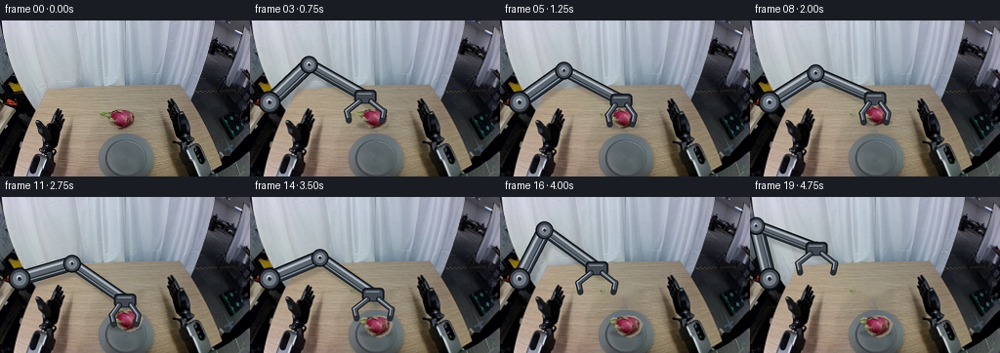
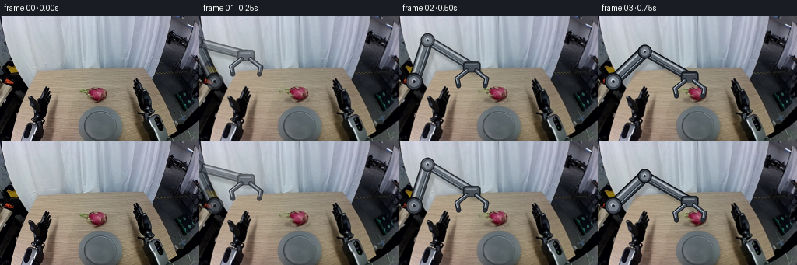
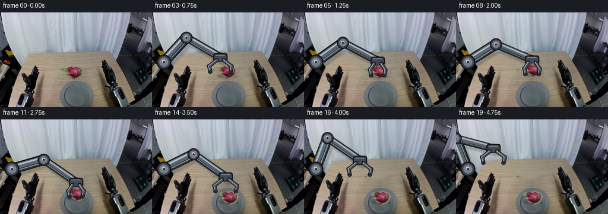
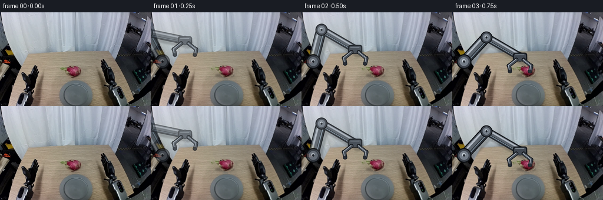
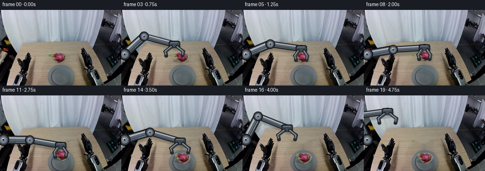
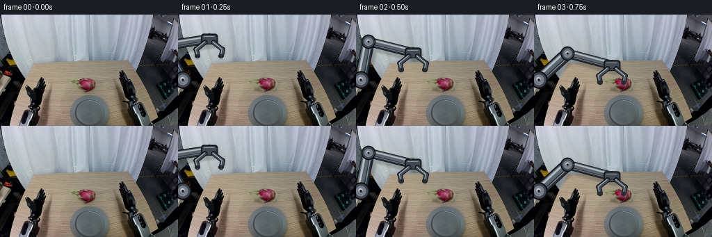

CODING AGENTS AS PIXEL WORLD MODELS
traex/DeepSeek-V4.1-Flash · common50_0041
点击播放 · 原生 RGB 像素
逐轮保存的候选
回放视频、检查图与代码变化。
每份候选均可单独播放。实际图片检查记录在下方工具轨迹中。
候选 01播放与检查图
点击播放 · 原生 RGB 像素


展开代码变化
--- 上一保存版本
+++ 本次保存版本
@@ -0,0 +1,405 @@
+from pathlib import Path
+
+import cv2
+import numpy as np
+from PIL import Image, ImageDraw, ImageFilter
+
+import artifact_io
+
+
+ROOT = Path(__file__).resolve().parent
+W, H, N = 256, 160, 20
+SS = 3
+
+
+def smoothstep(value):
+ value = float(np.clip(value, 0.0, 1.0))
+ return value * value * (3.0 - 2.0 * value)
+
+
+def rounded_line(draw, points, width, fill):
+ draw.line(points, fill=fill, width=int(round(width)), joint="curve")
+ radius = width / 2.0
+ for x, y in points:
+ draw.ellipse(
+ (x - radius, y - radius, x + radius, y + radius),
+ fill=fill,
+ )
+
+
+def link_polygon(points, width):
+ points = np.asarray(points, dtype=np.float32)
+ left = []
+ right = []
+ for index, point in enumerate(points):
+ if index == 0:
+ tangent = points[1] - point
+ elif index == len(points) - 1:
+ tangent = point - points[index - 1]
+ else:
+ tangent = points[index + 1] - points[index - 1]
+ tangent /= max(np.linalg.norm(tangent), 1e-6)
+ normal = np.array([-tangent[1], tangent[0]])
+ left.append(point + normal * width * 0.5)
+ right.append(point - normal * width * 0.5)
+ return [tuple(p) for p in left + right[::-1]]
+
+
+def draw_metal_link(draw, start, end, radius):
+ start = np.asarray(start, dtype=np.float32)
+ end = np.asarray(end, dtype=np.float32)
+ direction = end - start
+ length = max(float(np.linalg.norm(direction)), 1.0)
+ normal = np.array([-direction[1], direction[0]], dtype=np.float32) / length
+
+ def offset(amount):
+ return start + normal * amount, end + normal * amount
+
+ # Dark silhouette, broad shaded body, and two narrow light bands make the
+ # links read as rigid rounded metal instead of flat lines.
+ a, b = offset(-0.7)
+ rounded_line(draw, [tuple(a), tuple(b)], radius * 2.18, (16, 19, 23, 255))
+ a, b = offset(0.0)
+ rounded_line(draw, [tuple(a), tuple(b)], radius * 1.82, (43, 48, 55, 255))
+ a, b = offset(-radius * 0.30)
+ rounded_line(draw, [tuple(a), tuple(b)], radius * 1.18, (91, 99, 108, 255))
+ a, b = offset(-radius * 0.50)
+ rounded_line(draw, [tuple(a), tuple(b)], radius * 0.34, (176, 184, 194, 255))
+
+ # A restrained blue-gray rim light gives the arm a consistent light source.
+ a, b = offset(radius * 0.53)
+ rounded_line(draw, [tuple(a), tuple(b)], radius * 0.18, (132, 153, 170, 205))
+
+
+def draw_joint(draw, center, radius):
+ x, y = center
+ draw.ellipse(
+ (x - radius * 1.28, y - radius * 1.28, x + radius * 1.28, y + radius * 1.28),
+ fill=(13, 16, 20, 255),
+ )
+ draw.ellipse(
+ (x - radius * 1.08, y - radius * 1.08, x + radius * 1.08, y + radius * 1.08),
+ fill=(62, 68, 77, 255),
+ )
+ draw.ellipse(
+ (x - radius * 0.78, y - radius * 0.78, x + radius * 0.78, y + radius * 0.78),
+ fill=(116, 125, 136, 255),
+ )
+ draw.ellipse(
+ (x - radius * 0.36, y - radius * 0.42, x + radius * 0.24, y + radius * 0.18),
+ fill=(190, 199, 207, 255),
+ )
+ draw.ellipse(
+ (x - radius * 0.20, y - radius * 0.20, x + radius * 0.20, y + radius * 0.20),
+ fill=(34, 39, 46, 255),
+ )
+
+
+def solve_elbow(shoulder, wrist, upper_len, fore_len):
+ shoulder = np.asarray(shoulder, dtype=np.float64)
+ wrist = np.asarray(wrist, dtype=np.float64)
+ delta = wrist - shoulder
+ distance = float(np.linalg.norm(delta))
+ distance = max(1e-5, min(distance, upper_len + fore_len - 1e-3))
+ unit = delta / max(float(np.linalg.norm(delta)), 1e-6)
+ along = (upper_len**2 - fore_len**2 + distance**2) / (2.0 * distance)
+ height = np.sqrt(max(upper_len**2 - along**2, 0.0))
+ upward = np.array([delta[1], -delta[0]], dtype=np.float64)
+ upward /= max(float(np.linalg.norm(upward)), 1e-6)
+ return shoulder + unit * along + upward * height
+
+
+def fruit_alpha_mask():
+ mask = Image.new("L", (W, H), 0)
+ draw = ImageDraw.Draw(mask)
+ polygon = [
+ (106, 94),
+ (111, 92),
+ (116, 93),
+ (119, 91),
+ (125, 90),
+ (132, 91),
+ (137, 94),
+ (140, 98),
+ (139, 103),
+ (136, 108),
+ (132, 111),
+ (127, 113),
+ (121, 111),
+ (116, 108),
+ (113, 104),
+ (111, 100),
+ (109, 98),
+ ]
+ draw.polygon(polygon, fill=255)
+ return np.asarray(mask)
+
+
+def clean_source_frame(frame, mask):
+ kernel = np.ones((5, 5), np.uint8)
+ clean_mask = cv2.dilate(mask, kernel, iterations=1)
+ clean_mask[115:, :] = 0
+ inpainted = cv2.inpaint(frame, clean_mask, 4, cv2.INPAINT_TELEA)
+
+ # Keep the tabletop's fine photographic grain over the repaired patch.
+ rng = np.random.default_rng(41)
+ ys, xs = np.where(clean_mask > 0)
+ if len(xs):
+ local = frame[
+ max(0, int(ys.min()) - 3) : min(H, int(ys.max()) + 4),
+ max(0, int(xs.min()) - 3) : min(W, int(xs.max()) + 4),
+ ].astype(np.float32)
+ noise = rng.normal(0.0, 1.8, (len(ys), 1))
+ grain = np.clip(local.mean(axis=(0, 1)) * 0.012, 0.7, 2.0)
+ inpainted[ys, xs] = np.clip(
+ inpainted[ys, xs].astype(np.float32) + noise * grain, 0, 255
+ ).astype(np.uint8)
+ return inpainted
+
+
+def make_fruit_rgba(frame, mask):
+ x0, y0, x1, y1 = 102, 86, 143, 116
+ rgb = frame[y0:y1, x0:x1]
+ alpha = mask[y0:y1, x0:x1]
+ rgba = np.dstack([rgb, alpha])
+ return Image.fromarray(rgba), (x0, y0, x1, y1)
+
+
+def draw_shadow(canvas, arm_points, fruit_center, fruit_visible):
+ draw = ImageDraw.Draw(canvas)
+ if fruit_visible:
+ cx, cy = fruit_center
+ draw.ellipse(
+ (
+ (cx - 16) * SS,
+ (cy + 4) * SS,
+ (cx + 17) * SS,
+ (cy + 11) * SS,
+ ),
+ fill=(19, 18, 15, 78),
+ )
+
+ if arm_points is not None:
+ shoulder, elbow, wrist = arm_points
+ points = [
+ (shoulder[0] * SS + 5 * SS, shoulder[1] * SS + 5 * SS),
+ (elbow[0] * SS + 5 * SS, elbow[1] * SS + 5 * SS),
+ (wrist[0] * SS + 5 * SS, wrist[1] * SS + 5 * SS),
+ ]
+ rounded_line(draw, points, 15 * SS, (12, 13, 14, 48))
+
+
+def draw_arm(canvas, shoulder, elbow, wrist, finger_open):
+ draw = ImageDraw.Draw(canvas)
+ s = np.asarray(shoulder) * SS
+ e = np.asarray(elbow) * SS
+ w = np.asarray(wrist) * SS
+
+ draw_metal_link(draw, s, e, 7.2 * SS)
+ draw_metal_link(draw, e, w, 5.7 * SS)
+
+ draw_joint(draw, s, 8.8 * SS)
+ draw_joint(draw, e, 7.0 * SS)
+ draw_joint(draw, w, 5.6 * SS)
+
+ # Wrist housing, aligned with the vertical gripper.
+ housing_w, housing_h = 23.0 * SS, 14.0 * SS
+ box = (
+ w[0] - housing_w / 2,
+ w[1] - housing_h / 2,
+ w[0] + housing_w / 2,
+ w[1] + housing_h / 2,
+ )
+ draw.rounded_rectangle(box, radius=4.0 * SS, fill=(22, 26, 31, 255))
+ inset = (
+ box[0] + 2.0 * SS,
+ box[1] + 2.0 * SS,
+ box[2] - 2.0 * SS,
+ box[3] - 1.0 * SS,
+ )
+ draw.rounded_rectangle(inset, radius=2.8 * SS, fill=(65, 72, 81, 255))
+ draw.line(
+ [
+ (inset[0] + 2 * SS, inset[1] + 2 * SS),
+ (inset[2] - 3 * SS, inset[1] + 2 * SS),
+ ],
+ fill=(151, 162, 173, 235),
+ width=max(1, int(1.2 * SS)),
+ )
+
+ draw_fingers(draw, wrist, finger_open)
+
+
+def draw_fingers(draw, wrist, finger_open):
+ cx, cy = wrist
+ opening = 12.5 + 5.5 * smoothstep(finger_open)
+ for side in (-1.0, 1.0):
+ p0 = ((cx + side * 6.3) * SS, (cy + 5.0) * SS)
+ p1 = ((cx + side * (opening + 1.0)) * SS, (cy + 15.0) * SS)
+ p2 = ((cx + side * (opening - 1.0)) * SS, (cy + 24.5) * SS)
+ rounded_line(draw, [p0, p1, p2], 6.0 * SS, (17, 20, 24, 255))
+ rounded_line(draw, [p0, p1, p2], 4.1 * SS, (70, 77, 86, 255))
+ rounded_line(
+ draw,
+ [
+ (p0[0] - 0.8 * SS, p0[1] - 0.6 * SS),
+ (p1[0] - 0.7 * SS, p1[1] - 0.5 * SS),
+ (p2[0] - 0.4 * SS, p2[1] - 0.4 * SS),
+ ],
+ 1.0 * SS,
+ (169, 179, 190, 235),
+ )
+ draw.ellipse(
+ (
+ p2[0] - 2.8 * SS,
+ p2[1] - 2.8 * SS,
+ p2[0] + 2.8 * SS,
+ p2[1] + 2.8 * SS,
+ ),
+ fill=(39, 44, 51, 255),
+ )
+
+
+def compose_frame(background, fruit_image, fruit_box, arm, fruit_center, angle, opacity):
+ shadow = Image.new("RGBA", (W * SS, H * SS), (0, 0, 0, 0))
+ arm_layer = Image.new("RGBA", (W * SS, H * SS), (0, 0, 0, 0))
+ fingers_layer = Image.new("RGBA", (W * SS, H * SS), (0, 0, 0, 0))
+
+ fruit_visible = fruit_image is not None
+ arm_points = None
+ if arm is not None:
+ arm_points = (arm["shoulder"], arm["elbow"], arm["wrist"])
+ draw_shadow(shadow, arm_points, fruit_center, fruit_visible)
+ shadow = shadow.filter(ImageFilter.GaussianBlur(1.25 * SS))
+
+ if arm is not None:
+ draw_arm(arm_layer, arm["shoulder"], arm["elbow"], arm["wrist"], arm["open"])
+ # The fingertips are a separate pass so they can overlap the fruit.
+ fingers = ImageDraw.Draw(fingers_layer)
+ draw_fingers(fingers, arm["wrist"], arm["open"])
+
+ if arm is not None and opacity < 1.0:
+ alpha = arm_layer.getchannel("A").point(lambda value: int(value * opacity))
+ arm_layer.putalpha(alpha)
+ alpha = fingers_layer.getchannel("A").point(lambda value: int(value * opacity))
+ fingers_layer.putalpha(alpha)
+
+ result = background.resize((W * SS, H * SS), Image.Resampling.BICUBIC).convert("RGBA")
+ result = Image.alpha_composite(result, shadow)
+ if arm is not None:
+ result = Image.alpha_composite(result, arm_layer)
+
+ if fruit_image is not None:
+ x0, y0, x1, y1 = fruit_box
+ sprite = fruit_image.resize(
+ ((x1 - x0) * SS, (y1 - y0) * SS), Image.Resampling.LANCZOS
+ )
+ rotated = sprite.rotate(
+ angle,
+ resample=Image.Resampling.BICUBIC,
+ expand=True,
+ )
+ cx, cy = fruit_center
+ px = int(round(cx * SS - rotated.width / 2))
+ py = int(round(cy * SS - rotated.height / 2))
+ result.alpha_composite(rotated, (px, py))
+
+ if arm is not None:
+ result = Image.alpha_composite(result, fingers_layer)
+
+ result = result.resize((W, H), Image.Resampling.LANCZOS)
+ return np.asarray(result.convert("RGB"), dtype=np.uint8)
+
+
+def build_states():
+ states = []
+ for index in range(N):
+ states.append(
+ {
+ "arm": False,
+ "wrist": (124.0, 82.0),
+ "fruit": (125.0, 100.0),
+ "angle": 0.0,
+ "open": 1.0,
+ "opacity": 1.0,
+ }
+ )
+
+ keyframes = [
+ (1, (60, 50), (125, 100), 0.0, 1.0, 0.58),
+ (2, (94, 65), (125, 100), 0.0, 1.0, 0.88),
+ (3, (118, 78), (125, 100), 0.0, 1.0, 1.0),
+ (4, (124, 82), (125, 100), 0.0, 1.0, 1.0),
+ (5, (124, 82), (125, 100), 0.0, 0.0, 1.0),
+ (6, (124, 77), (125, 95), 1.0, 0.0, 1.0),
+ (7, (126, 73), (126, 90), 1.4, 0.0, 1.0),
+ (8, (128, 80), (128, 97), 0.8, 0.0, 1.0),
+ (9, (128, 90), (128, 107), 0.1, 0.0, 1.0),
+ (10, (128, 99), (128, 117), -0.6, 0.0, 1.0),
+ (11, (128, 106), (128, 126), -1.0, 0.0, 1.0),
+ (12, (128, 111), (128, 132), -0.5, 0.0, 1.0),
+ (13, (128, 111), (128, 132), 0.0, 1.0, 1.0),
+ (14, (126, 100), (128, 132), 0.0, 1.0, 1.0),
+ (15, (113, 86), (128, 132), 0.0, 1.0, 1.0),
+ (16, (99, 73), (128, 132), 0.0, 1.0, 1.0),
+ (17, (84, 63), (128, 132), 0.0, 1.0, 1.0),
+ (18, (73, 56), (128, 132), 0.0, 1.0, 1.0),
+ (19, (68, 53), (128, 132), 0.0, 1.0, 1.0),
+ ]
+ for index, wrist, fruit, angle, opening, opacity in keyframes:
+ states[index].update(
+ {
+ "arm": True,
+ "wrist": tuple(float(v) for v in wrist),
+ "fruit": tuple(float(v) for v in fruit),
+ "angle": float(angle),
+ "open": float(opening),
+ "opacity": float(opacity),
+ }
+ )
+ return states
+
+
+def main():
+ first = np.asarray(Image.open(ROOT / "first_frame.png").convert("RGB"))
+ mask = fruit_alpha_mask()
+ cleaned = clean_source_frame(first, mask)
+ fruit_image, fruit_box = make_fruit_rgba(first, mask)
+
+ background = Image.fromarray(cleaned)
+ shoulder = (20.0, 84.0)
+ upper_len, fore_len = 56.0, 66.0
+ frames = []
+ for index, state in enumerate(build_states()):
+ if index == 0:
+ frames.append(first.copy())
+ continue
+
+ arm = None
+ if state["arm"]:
+ elbow = solve_elbow(shoulder, state["wrist"], upper_len, fore_len)
+ arm = {
+ "shoulder": shoulder,
+ "elbow": tuple(float(v) for v in elbow),
+ "wrist": state["wrist"],
+ "open": state["open"],
+ }
+ frame = compose_frame(
+ background,
+ fruit_image,
+ fruit_box,
+ arm,
+ state["fruit"],
+ state["angle"],
+ state["opacity"],
+ )
+ frames.append(frame)
+
+ frames = np.stack(frames)
+ assert frames.shape == (N, H, W, 3) and frames.dtype == np.uint8
+ assert np.array_equal(frames[0], first)
+ artifact_io.save(frames, ROOT)
+
+
+if __name__ == "__main__":
+ main()
候选 02播放与检查图
点击播放 · 原生 RGB 像素


展开代码变化
--- 上一保存版本
+++ 本次保存版本
@@ -186,7 +186,7 @@
(elbow[0] * SS + 5 * SS, elbow[1] * SS + 5 * SS),
(wrist[0] * SS + 5 * SS, wrist[1] * SS + 5 * SS),
]
- rounded_line(draw, points, 15 * SS, (12, 13, 14, 48))
+ rounded_line(draw, points, 17 * SS, (12, 13, 14, 52))
def draw_arm(canvas, shoulder, elbow, wrist, finger_open):
@@ -195,15 +195,15 @@
e = np.asarray(elbow) * SS
w = np.asarray(wrist) * SS
- draw_metal_link(draw, s, e, 7.2 * SS)
- draw_metal_link(draw, e, w, 5.7 * SS)
-
- draw_joint(draw, s, 8.8 * SS)
- draw_joint(draw, e, 7.0 * SS)
- draw_joint(draw, w, 5.6 * SS)
+ draw_metal_link(draw, s, e, 8.4 * SS)
+ draw_metal_link(draw, e, w, 6.4 * SS)
+
+ draw_joint(draw, s, 9.8 * SS)
+ draw_joint(draw, e, 7.9 * SS)
+ draw_joint(draw, w, 6.2 * SS)
# Wrist housing, aligned with the vertical gripper.
- housing_w, housing_h = 23.0 * SS, 14.0 * SS
+ housing_w, housing_h = 24.0 * SS, 15.0 * SS
box = (
w[0] - housing_w / 2,
w[1] - housing_h / 2,
@@ -232,13 +232,13 @@
def draw_fingers(draw, wrist, finger_open):
cx, cy = wrist
- opening = 12.5 + 5.5 * smoothstep(finger_open)
+ opening = 12.0 + 6.0 * smoothstep(finger_open)
for side in (-1.0, 1.0):
p0 = ((cx + side * 6.3) * SS, (cy + 5.0) * SS)
p1 = ((cx + side * (opening + 1.0)) * SS, (cy + 15.0) * SS)
p2 = ((cx + side * (opening - 1.0)) * SS, (cy + 24.5) * SS)
- rounded_line(draw, [p0, p1, p2], 6.0 * SS, (17, 20, 24, 255))
- rounded_line(draw, [p0, p1, p2], 4.1 * SS, (70, 77, 86, 255))
+ rounded_line(draw, [p0, p1, p2], 6.8 * SS, (17, 20, 24, 255))
+ rounded_line(draw, [p0, p1, p2], 4.6 * SS, (70, 77, 86, 255))
rounded_line(
draw,
[
@@ -326,9 +326,9 @@
)
keyframes = [
- (1, (60, 50), (125, 100), 0.0, 1.0, 0.58),
- (2, (94, 65), (125, 100), 0.0, 1.0, 0.88),
- (3, (118, 78), (125, 100), 0.0, 1.0, 1.0),
+ (1, (58, 48), (125, 100), 0.0, 1.0, 0.54),
+ (2, (91, 63), (125, 100), 0.0, 1.0, 0.86),
+ (3, (115, 76), (125, 100), 0.0, 1.0, 1.0),
(4, (124, 82), (125, 100), 0.0, 1.0, 1.0),
(5, (124, 82), (125, 100), 0.0, 0.0, 1.0),
(6, (124, 77), (125, 95), 1.0, 0.0, 1.0),
@@ -338,13 +338,13 @@
(10, (128, 99), (128, 117), -0.6, 0.0, 1.0),
(11, (128, 106), (128, 126), -1.0, 0.0, 1.0),
(12, (128, 111), (128, 132), -0.5, 0.0, 1.0),
- (13, (128, 111), (128, 132), 0.0, 1.0, 1.0),
- (14, (126, 100), (128, 132), 0.0, 1.0, 1.0),
- (15, (113, 86), (128, 132), 0.0, 1.0, 1.0),
- (16, (99, 73), (128, 132), 0.0, 1.0, 1.0),
- (17, (84, 63), (128, 132), 0.0, 1.0, 1.0),
- (18, (73, 56), (128, 132), 0.0, 1.0, 1.0),
- (19, (68, 53), (128, 132), 0.0, 1.0, 1.0),
+ (13, (128, 110), (128, 132), 0.0, 1.0, 1.0),
+ (14, (124, 97), (128, 132), 0.0, 1.0, 1.0),
+ (15, (109, 82), (128, 132), 0.0, 1.0, 1.0),
+ (16, (94, 69), (128, 132), 0.0, 1.0, 1.0),
+ (17, (80, 59), (128, 132), 0.0, 1.0, 1.0),
+ (18, (69, 52), (128, 132), 0.0, 1.0, 1.0),
+ (19, (63, 49), (128, 132), 0.0, 1.0, 1.0),
]
for index, wrist, fruit, angle, opening, opacity in keyframes:
states[index].update(
候选 03播放与检查图
点击播放 · 原生 RGB 像素


展开代码变化
--- 上一保存版本
+++ 本次保存版本
@@ -25,24 +25,6 @@
(x - radius, y - radius, x + radius, y + radius),
fill=fill,
)
-
-
-def link_polygon(points, width):
- points = np.asarray(points, dtype=np.float32)
- left = []
- right = []
- for index, point in enumerate(points):
- if index == 0:
- tangent = points[1] - point
- elif index == len(points) - 1:
- tangent = point - points[index - 1]
- else:
- tangent = points[index + 1] - points[index - 1]
- tangent /= max(np.linalg.norm(tangent), 1e-6)
- normal = np.array([-tangent[1], tangent[0]])
- left.append(point + normal * width * 0.5)
- right.append(point - normal * width * 0.5)
- return [tuple(p) for p in left + right[::-1]]
def draw_metal_link(draw, start, end, radius):
@@ -263,6 +245,7 @@
def compose_frame(background, fruit_image, fruit_box, arm, fruit_center, angle, opacity):
shadow = Image.new("RGBA", (W * SS, H * SS), (0, 0, 0, 0))
arm_layer = Image.new("RGBA", (W * SS, H * SS), (0, 0, 0, 0))
+ fruit_layer = Image.new("RGBA", (W * SS, H * SS), (0, 0, 0, 0))
fingers_layer = Image.new("RGBA", (W * SS, H * SS), (0, 0, 0, 0))
fruit_visible = fruit_image is not None
@@ -284,11 +267,6 @@
alpha = fingers_layer.getchannel("A").point(lambda value: int(value * opacity))
fingers_layer.putalpha(alpha)
- result = background.resize((W * SS, H * SS), Image.Resampling.BICUBIC).convert("RGBA")
- result = Image.alpha_composite(result, shadow)
- if arm is not None:
- result = Image.alpha_composite(result, arm_layer)
-
if fruit_image is not None:
x0, y0, x1, y1 = fruit_box
sprite = fruit_image.resize(
@@ -302,12 +280,24 @@
cx, cy = fruit_center
px = int(round(cx * SS - rotated.width / 2))
py = int(round(cy * SS - rotated.height / 2))
- result.alpha_composite(rotated, (px, py))
+ fruit_layer.alpha_composite(rotated, (px, py))
+
+ shadow = shadow.resize((W, H), Image.Resampling.LANCZOS)
+ arm_layer = arm_layer.resize((W, H), Image.Resampling.LANCZOS)
+ fruit_layer = fruit_layer.resize((W, H), Image.Resampling.LANCZOS)
+ fingers_layer = fingers_layer.resize((W, H), Image.Resampling.LANCZOS)
+
+ result = background.convert("RGBA")
+ result = Image.alpha_composite(result, shadow)
+ if arm is not None:
+ result = Image.alpha_composite(result, arm_layer)
+
+ if fruit_image is not None:
+ result = Image.alpha_composite(result, fruit_layer)
if arm is not None:
result = Image.alpha_composite(result, fingers_layer)
- result = result.resize((W, H), Image.Resampling.LANCZOS)
return np.asarray(result.convert("RGB"), dtype=np.uint8)
@@ -326,9 +316,9 @@
)
keyframes = [
- (1, (58, 48), (125, 100), 0.0, 1.0, 0.54),
- (2, (91, 63), (125, 100), 0.0, 1.0, 0.86),
- (3, (115, 76), (125, 100), 0.0, 1.0, 1.0),
+ (1, (45, 35), (125, 100), 0.0, 1.0, 1.0),
+ (2, (82, 55), (125, 100), 0.0, 1.0, 1.0),
+ (3, (112, 73), (125, 100), 0.0, 1.0, 1.0),
(4, (124, 82), (125, 100), 0.0, 1.0, 1.0),
(5, (124, 82), (125, 100), 0.0, 0.0, 1.0),
(6, (124, 77), (125, 95), 1.0, 0.0, 1.0),
@@ -337,14 +327,14 @@
(9, (128, 90), (128, 107), 0.1, 0.0, 1.0),
(10, (128, 99), (128, 117), -0.6, 0.0, 1.0),
(11, (128, 106), (128, 126), -1.0, 0.0, 1.0),
- (12, (128, 111), (128, 132), -0.5, 0.0, 1.0),
+ (12, (128, 111), (128, 130), -0.5, 0.0, 1.0),
(13, (128, 110), (128, 132), 0.0, 1.0, 1.0),
(14, (124, 97), (128, 132), 0.0, 1.0, 1.0),
(15, (109, 82), (128, 132), 0.0, 1.0, 1.0),
(16, (94, 69), (128, 132), 0.0, 1.0, 1.0),
- (17, (80, 59), (128, 132), 0.0, 1.0, 1.0),
- (18, (69, 52), (128, 132), 0.0, 1.0, 1.0),
- (19, (63, 49), (128, 132), 0.0, 1.0, 1.0),
+ (17, (80, 58), (128, 132), 0.0, 1.0, 1.0),
+ (18, (64, 46), (128, 132), 0.0, 1.0, 1.0),
+ (19, (50, 34), (128, 132), 0.0, 1.0, 1.0),
]
for index, wrist, fruit, angle, opening, opacity in keyframes:
states[index].update(
@@ -367,7 +357,7 @@
fruit_image, fruit_box = make_fruit_rgba(first, mask)
background = Image.fromarray(cleaned)
- shoulder = (20.0, 84.0)
+ shoulder = (7.0, 94.0)
upper_len, fore_len = 56.0, 66.0
frames = []
for index, state in enumerate(build_states()):
候选 04播放与检查图
点击播放 · 原生 RGB 像素
展开代码变化
--- 上一保存版本
+++ 本次保存版本
@@ -92,29 +92,26 @@
def fruit_alpha_mask():
- mask = Image.new("L", (W, H), 0)
- draw = ImageDraw.Draw(mask)
- polygon = [
- (106, 94),
- (111, 92),
- (116, 93),
- (119, 91),
- (125, 90),
- (132, 91),
- (137, 94),
- (140, 98),
- (139, 103),
- (136, 108),
- (132, 111),
- (127, 113),
- (121, 111),
- (116, 108),
- (113, 104),
- (111, 100),
- (109, 98),
- ]
- draw.polygon(polygon, fill=255)
- return np.asarray(mask)
+ source = np.asarray(Image.open(ROOT / "first_frame.png").convert("RGB"))
+ hsv = cv2.cvtColor(source, cv2.COLOR_RGB2HSV)
+ hue, saturation, value = hsv.transpose(2, 0, 1)
+
+ pink = ((hue < 12) | (hue > 145)) & (saturation > 55)
+ green = (hue > 25) & (hue < 110) & (saturation > 25)
+ shadowed = value < 130
+ region = np.zeros((H, W), dtype=bool)
+ region[89:114, 104:143] = True
+
+ # Restrict the matte to the photographed fruit rather than its rectangular
+ # crop. The pink flesh, green scales, and dark underside are all retained.
+ mask = region & (pink | green | shadowed)
+ mask = cv2.morphologyEx(
+ mask.astype(np.uint8), cv2.MORPH_CLOSE, np.ones((3, 3), np.uint8)
+ )
+ mask = cv2.morphologyEx(
+ mask, cv2.MORPH_OPEN, np.ones((3, 3), np.uint8)
+ )
+ return mask * 255
def clean_source_frame(frame, mask):
可观测工具轨迹
实际执行的命令与返回图片。
命令 1exit 0
/bin/bash -c "pwd && rg --files -g 'prompt.txt' -g 'GENERATION_RULES.md' -g 'first_frame.png' -g '"'!*.mp4'"'"
命令 2exit 0
/bin/bash -c 'ls -la'
命令 3exit 0
/bin/bash -c "find . -maxdepth 2 -type f -printf '%p %s bytes\\n' | sort | head -200"
命令 4exit 0
/bin/bash -c 'cat prompt.txt'
命令 5exit 0
/bin/bash -c 'cat GENERATION_RULES.md'
命令 6exit 0
/bin/bash -c 'cat task_spec.json'
命令 7exit 0
/bin/bash -c "sed -n '1,260p' artifact_io.py"
命令 8exit 0
/bin/bash -c "sed -n '1,240p' player_template.html"
命令 9exit 0
/bin/bash -c "python - <<'PY'
from PIL import Image
import numpy as np
im=Image.open('first_frame.png').convert('RGB')
a=np.asarray(im)
print('size',im.size,'shape',a.shape,'dtype',a.dtype)
print('minmax',a.min((0,1)),a.max((0,1)),'mean',a.mean((0,1)))
# most frequent exact colors
u,c=np.unique(a.reshape(-1,3),axis=0,return_counts=True)
idx=np.argsort(c)[-30:][::-1]
for i in idx:
print(tuple(u[i]), int(c[i]))
PY"命令 10exit 0
/bin/bash -c "python - <<'PY'
from PIL import Image
import numpy as np
im=np.asarray(Image.open('first_frame.png').convert('RGB'))
# 16x10 mean color blocks
for gy in range(10):
row=[]
for gx in range(16):
block=im[gy*16:(gy+1)*16,gx*16:(gx+1)*16]
m=block.mean((0,1)).astype(int)
row.append('%02x%02x%02x'%tuple(m))
print(' '.join(row))
PY"命令 11exit 0
/bin/bash -c "python - <<'PY'
from PIL import Image
import numpy as np
im=np.asarray(Image.open('first_frame.png').convert('RGB')).astype(float)
r,g,b=im.transpose(2,0,1)
mx=im.max(2); mn=im.min(2); sat=(mx-mn)/(mx+1e-6)
# pink: red exceeds g/b
for name,m in [
('pink',(r>g*1.18)&(r>b*1.12)&(sat>.18)&(mx>70)),
('red',(r>g*1.3)&(r>b*1.3)&(mx>70)),
('green',(g>r*1.2)&(g>b*1.05)&(mx>50)),
('blue',(b>r*1.2)&(b>g*1.1)&(mx>50)),
('bright',mx>200),
('dark',mx<25),
]:
ys,xs=np.where(m)
print(name,'n',len(xs),'x', (xs.min(),xs.max()) if len(xs) else None,'y',(ys.min(),ys.max()) if len(ys) else None,'mean',im[m].mean(0) if len(xs) else None)
# bounds per y bands
if len(xs):
h=np.histogram(xs,bins=16,range=(0,256))[0]
print(' xhist',h.tolist())
print(' yhist',np.histogram(ys,bins=10,range=(0,160))[0].tolist())
PY"命令 12exit 0
/bin/bash -c "python - <<'PY'
import cv2
print('cv2',cv2.__version__)
print('ffmpeg?')
PY
which ffmpeg || true
python - <<'PY'
import importlib.util
for m in ['numpy','PIL','cv2','scipy','skimage','imageio','torch','matplotlib']:
print(m, bool(importlib.util.find_spec(m)))
PY"命令 13exit 0
/bin/bash -c "python - <<'PY'
from PIL import Image
import numpy as np
im=np.asarray(Image.open('first_frame.png').convert('RGB')).astype(float)
# 4x4 blocks to 64x40, print luminance ascii
lum=im@np.array([.2126,.7152,.0722])
chars=' .:-=+*#%@'
for y in range(0,160,4):
s=''
for x in range(0,256,4):
v=lum[y:y+4,x:x+4].mean()
s+=chars[min(9,int(v/256*10))]
print(s)
PY"命令 14exit 0
/bin/bash -c "python - <<'PY'
import cv2,numpy as np
from PIL import Image
im=np.asarray(Image.open('first_frame.png').convert('RGB'))
Z=im.reshape(-1,3).astype(np.float32)
cv2.setRNGSeed(42)
crit=(cv2.TERM_CRITERIA_EPS+cv2.TERM_CRITERIA_MAX_ITER,100,0.2)
K=18
_,lab,cent=cv2.kmeans(Z,K,None,crit,10,cv2.KMEANS_PP_CENTERS)
lab=lab.reshape(160,256); cent=cent.astype(int)
order=np.argsort(cent@np.array([.2126,.7152,.0722]))
# print cluster stats sorted luminance
for i in order:
m=lab==i; ys,xs=np.where(m)
print(f'{i:2d} rgb={tuple(cent[i])} n={m.sum():5d} bbox=({xs.min()},{ys.min()})-({xs.max()},{ys.max()}) cen=({xs.mean():.1f},{ys.mean():.1f})')
# ascii labels 0-9a-h at 4x4 majority
chars='0123456789abcdefgh'
print('\\nCLUSTER MAP 4x4 majority')
for y in range(0,160,4):
s=''
for x in range(0,256,4):
vals,cnt=np.unique(lab[y:y+4,x:x+4],return_counts=True)
s+=chars[vals[np.argmax(cnt)]]
print(s)
PY"命令 15exit 0
/bin/bash -c "python - <<'PY'
from PIL import Image
import numpy as np
im=np.asarray(Image.open('first_frame.png').convert('RGB')).astype(np.float32)
# smooth and use Canny
import cv2
g=cv2.cvtColor(im.astype(np.uint8),cv2.COLOR_RGB2GRAY)
e=cv2.Canny(g,40,100)
# ascii edge map 2x2
print('\\n'.join(''.join('#' if e[y:y+2,x:x+2].max() else ' ' for x in range(0,256,2)) for y in range(0,160,2)))
PY"命令 16exit 0
/bin/bash -c "python - <<'PY'
from PIL import Image
import numpy as np
im=np.asarray(Image.open('first_frame.png').convert('RGB')).astype(int)
# RGB values sampled at key suspected points
for y in range(0,160,10):
print(f'{y:3d}:', ' '.join('%3d,%3d,%3d'%tuple(im[y,x]) for x in range(0,256,20)))
PY"命令 17exit 0
/bin/bash -c "python - <<'PY'
import cv2,numpy as np
from PIL import Image
im=np.asarray(Image.open('first_frame.png').convert('RGB'))
hsv=cv2.cvtColor(im,cv2.COLOR_RGB2HSV)
# print top colors by HSV bins for pixels y>=60
for ymin in [0,50,60,65,70,80,90,100,110,120]:
m=np.zeros((160,256),bool);m[ymin:]=1
H,S,V=hsv[...,0][m],hsv[...,1][m],hsv[...,2][m]
# hue hist
hist=np.bincount(H,minlength=180)
tops=np.argsort(hist)[-12:][::-1]
print('ymin',ymin,'n',m.sum())
print([(int(h),int(hist[h])) for h in tops])
# connected components masks for saturated red/pink
for name,lo,hi in [('pink1',(160,40,50),(179,255,255)),('red',(0,80,50),(10,255,255)),('pink2',(150,20,60),(179,255,255)),('green',(30,40,30),(90,255,255))]:
mask=cv2.inRange(hsv,np.array(lo),np.array(hi))
n,lab,stats,cents=cv2.connectedComponentsWithStats(mask)
comps=[]
for i in range(1,n):
x,y,w,h,area=stats[i]
if area>=5: comps.append((area,x,y,w,h,tuple(np.round(cents[i],1))))
comps.sort(reverse=True)
print(name,comps[:20])
PY"命令 18exit 0
/bin/bash -c "python - <<'PY'
from PIL import Image
import numpy as np, cv2
im=np.asarray(Image.open('first_frame.png').convert('RGB'))
hsv=cv2.cvtColor(im,cv2.COLOR_RGB2HSV)
H,S,V=hsv.transpose(2,0,1)
for y in range(0,160,4):
s=''
for x in range(0,256,4):
hh=H[y:y+4,x:x+4];ss=S[y:y+4,x:x+4];vv=V[y:y+4,x:x+4]
# pick based on mean
h=hh.mean(); sat=ss.mean(); val=vv.mean()
if sat>100 and (h<10 or h>150): ch='P'
elif sat>80 and 25<h<100: ch='G'
elif sat>60 and 10<h<35: ch='B' # brown/orange
elif sat>35 and 8<h<30: ch='b'
elif val<35: ch=' '
elif val<70: ch='.'
elif val<110: ch='-'
elif val<150: ch='='
elif val<190: ch='+'
elif val<220: ch='*'
else: ch='#'
s+=ch
print(s)
PY"命令 19exit 0
/bin/bash -c "python - <<'PY'
import cv2,numpy as np
from PIL import Image
im=np.asarray(Image.open('first_frame.png').convert('RGB'))
hsv=cv2.cvtColor(im,cv2.COLOR_RGB2HSV)
H,S,V=hsv.transpose(2,0,1)
# components for gray surfaces below y=60, sat<50, val ranges
for name,m in [
('gray_bright',(S<50)&(V>110)&(np.indices(V.shape)[0]>=60)),
('gray_mid',(S<45)&(V>70)&(V<130)&(np.indices(V.shape)[0]>=60)),
('gray_all',(S<60)&(V>50)&(np.indices(V.shape)[0]>=60)),
('pink',((H<12)|(H>150))&(S>80)&(V>50)&(np.indices(V.shape)[0]>=60)),
('dark',(V<35)&(np.indices(V.shape)[0]>=60)),
('brown',(H>8)&(H<32)&(S>35)&(V>50)&(np.indices(V.shape)[0]>=60)),
]:
m=m.astype(np.uint8)*255
m=cv2.morphologyEx(m,cv2.MORPH_CLOSE,np.ones((3,3),np.uint8))
n,lab,stats,cents=cv2.connectedComponentsWithStats(m)
comps=[]
for i in range(1,n):
x,y,w,h,a=stats[i]
if a>30: comps.append((a,x,y,w,h,tuple(np.round(cents[i],1))))
comps.sort(reverse=True)
print('\\n',name, comps[:20])
PY"命令 20exit 0
/bin/bash -c "python - <<'PY'
import numpy as np, cv2
from PIL import Image
im=np.asarray(Image.open('first_frame.png').convert('RGB'))
# upscale 4x nearest and save for inspection via maybe local numeric no visual. still use edge/segmentation
Image.fromarray(im).resize((1024,640),Image.Resampling.NEAREST).save('.tmp/first_x4.png')
# create RGB channel stats in 32x32 blocks
for y0 in range(64,160,16):
print('\\nrow',y0)
for x0 in range(0,256,32):
b=im[y0:y0+16,x0:x0+32].astype(float)
print(f'{x0:3}:{tuple(np.round(b.mean((0,1))).astype(int))}',end=' ')
print()
PY"命令 21exit 0
/bin/bash -c "python - <<'PY'
from PIL import Image
import numpy as np, cv2
im=np.asarray(Image.open('first_frame.png').convert('RGB'))
hsv=cv2.cvtColor(im,cv2.COLOR_RGB2HSV); H,S,V=hsv.transpose(2,0,1)
# map crop 2x2 to 45x32, classify by color
for y in range(60,128,2):
s=''
for x in range(80,180,2):
h=np.median(H[y:y+2,x:x+2]);sat=np.median(S[y:y+2,x:x+2]);v=np.median(V[y:y+2,x:x+2]); r,g,b=im[y:y+2,x:x+2].mean((0,1))
if sat>100 and (h<12 or h>150) and v>50: ch='P'
elif sat>80 and 30<h<100 and v>40: ch='G'
elif sat>55 and h>=8 and h<30 and v>45: ch='B'
elif v<25: ch=' '
elif sat<45 and v>120: ch='#'
elif sat<50 and v>80: ch='+'
elif v<50: ch='.'
elif sat>50: ch='b'
else: ch='-'
s+=ch
print(f'{y:3d} '+s)
print(' '+''.join(str((80+i)//10%10) for i in range(0,100,2)))
print(' '+''.join(str((80+i)%10//1) for i in range(0,100,2)))
PY"命令 22exit 0
/bin/bash -c "python - <<'PY'
from PIL import Image
import numpy as np,cv2
im=np.asarray(Image.open('first_frame.png').convert('RGB'))
hsv=cv2.cvtColor(im,cv2.COLOR_RGB2HSV);H,S,V=hsv.transpose(2,0,1)
for y in range(60,160,2):
s=''
for x in range(0,120,2):
h=np.median(H[y:y+2,x:x+2]);sat=np.median(S[y:y+2,x:x+2]);v=np.median(V[y:y+2,x:x+2])
if sat>100 and (h<12 or h>150) and v>50: ch='P'
elif sat>80 and 30<h<100 and v>40: ch='G'
elif sat>55 and h>=8 and h<30 and v>45: ch='B'
elif v<25: ch=' '
elif sat<45 and v>120: ch='#'
elif sat<50 and v>80: ch='+'
elif v<50: ch='.'
elif sat>50: ch='b'
else: ch='-'
s+=ch
print(f'{y:3d} '+s)
PY"命令 23exit 0
/bin/bash -c "python - <<'PY'
from PIL import Image
import numpy as np, cv2
im=np.asarray(Image.open('first_frame.png').convert('RGB'))
hsv=cv2.cvtColor(im,cv2.COLOR_RGB2HSV);H,S,V=hsv.transpose(2,0,1)
# horizontal/vertical line scores for dark and surface boundaries
for name,mm in [('dark',V<30),('surface',(S<55)&(V>60)),('warm',(H>8)&(H<32)&(S>35)&(V>60))]:
print('\\n',name)
# x projection for lower
m=mm[65:160]
xs=m.sum(0)
peaks=np.argsort(xs)[-30:][::-1]
print('x peaks',[(int(x),int(xs[x])) for x in peaks[:20]])
ys=m.sum(1)
peaks=np.argsort(ys)[-20:][::-1]
print('y peaks',[(int(y+65),int(ys[y])) for y in peaks[:20]])
# Hough lines on edges
edges=cv2.Canny(cv2.cvtColor(im,cv2.COLOR_RGB2GRAY),30,80)
lines=cv2.HoughLinesP(edges[60:160],1,np.pi/180,threshold=35,minLineLength=30,maxLineGap=8)
print('\\nlines')
if lines is not None:
for l in sorted(lines[:,0,:].tolist(),key=lambda z:-((z[2]-z[0])**2+(z[3]-z[1])**2))[:40]:
x1,y1,x2,y2=l; print((x1,y1+60,x2,y2+60),'len',round(np.hypot(x2-x1,y2-y1),1))
PY"命令 24exit 0
/bin/bash -c "python - <<'PY'
import cv2,numpy as np
from PIL import Image
im=np.asarray(Image.open('first_frame.png').convert('RGB'))
hsv=cv2.cvtColor(im,cv2.COLOR_RGB2HSV);H,S,V=hsv.transpose(2,0,1)
# segment pink dragonfruit around (125,100)
m=(((H<12)|(H>145))&(S>70)&(V>45)).astype(np.uint8)
m[:85]=0;m[:, :105]=0;m[:,145:]=0
m=cv2.morphologyEx(m,cv2.MORPH_CLOSE,np.ones((5,5),np.uint8))
m=cv2.morphologyEx(m,cv2.MORPH_OPEN,np.ones((3,3),np.uint8))
contours,_=cv2.findContours(m,cv2.RETR_EXTERNAL,cv2.CHAIN_APPROX_SIMPLE)
for c in sorted(contours,key=cv2.contourArea,reverse=True)[:5]:
print('area',cv2.contourArea(c),'bbox',cv2.boundingRect(c))
if cv2.contourArea(c)>50:
print('approx',cv2.approxPolyDP(c,1.5,True).reshape(-1,2).tolist())
# fit ellipse to dominant pink component
mask=np.zeros(m.shape,np.uint8);cv2.drawContours(mask,[max(contours,key=cv2.contourArea)],-1,1,-1)
ys,xs=np.where(mask)
print('mask pts',len(xs),'mean',xs.mean(),ys.mean(),'cov',np.cov(xs,ys))
# bbox per row
print('rows')
for y in range(85,115):
x=np.where(mask[y])[0]
if len(x): print(y,x.min(),x.max(),len(x))
# grayscale circle plate candidate detect Hough
g=cv2.cvtColor(im,cv2.COLOR_RGB2GRAY)
cs=cv2.HoughCircles(g,cv2.HOUGH_GRADIENT,dp=1,minDist=10,param1=60,param2=20,minRadius=8,maxRadius=45)
print('circles',cs)
PY"命令 25exit 0
/bin/bash -c "python - <<'PY'
import cv2,numpy as np
from PIL import Image
im=np.asarray(Image.open('first_frame.png').convert('RGB'))
hsv=cv2.cvtColor(im,cv2.COLOR_RGB2HSV); H,S,V=hsv.transpose(2,0,1)
# crop x90:170 y85:160 at 1 pixel grouped 1x2 maybe map
for y in range(82,160,2):
s=''
for x in range(85,175,2):
h=np.median(H[y:y+2,x:x+2]); sat=np.median(S[y:y+2,x:x+2]); v=np.median(V[y:y+2,x:x+2])
# classify low sat gray, pink, brown, dark
if sat>100 and (h<12 or h>145) and v>50: ch='P'
elif sat>80 and 30<h<100 and v>40: ch='G'
elif sat>55 and h>=8 and h<30 and v>45: ch='B'
elif v<30: ch=' '
elif sat<30 and v>130: ch='#'
elif sat<45 and v>90: ch='+'
elif sat<55 and v>55: ch='-'
elif v<70: ch='.'
else: ch='b'
s+=ch
print(f'{y:3d} '+s)
print(' '+''.join(str((85+i)//10%10) for i in range(0,90,2)))
print(' '+''.join(str((85+i)%10) for i in range(0,90,2)))
PY"命令 26exit 0
/bin/bash -c "python - <<'PY'
from PIL import Image
import numpy as np, cv2
im=np.asarray(Image.open('first_frame.png').convert('RGB'))
hsv=cv2.cvtColor(im,cv2.COLOR_RGB2HSV);H,S,V=hsv.transpose(2,0,1)
for y in range(60,160,2):
s=''
for x in range(175,256,2):
h=np.median(H[y:y+2,x:x+2]); sat=np.median(S[y:y+2,x:x+2]); v=np.median(V[y:y+2,x:x+2])
if sat>100 and (h<12 or h>145) and v>50: ch='P'
elif sat>80 and 30<h<100 and v>40: ch='G'
elif sat>55 and h>=8 and h<30 and v>45: ch='B'
elif v<30: ch=' '
elif sat<30 and v>130: ch='#'
elif sat<45 and v>90: ch='+'
elif sat<55 and v>55: ch='-'
elif v<70: ch='.'
else: ch='b'
s+=ch
print(f'{y:3d} '+s)
print(' '+''.join(str((175+i)//10%10) for i in range(0,80,2)))
print(' '+''.join(str((175+i)%10) for i in range(0,80,2)))
PY"命令 27exit 0
/bin/bash -c "python - <<'PY'
from PIL import Image
import numpy as np,cv2
im=np.asarray(Image.open('first_frame.png').convert('RGB'))
# compute homography-ish table lines: test darkness by row segments x 0:190
for y in range(65,140):
m=(im[y,:190].mean(1)<80)
# longest run
idx=np.where(m)[0]
runs=[]
if len(idx):
b=np.r_[0,np.flatnonzero(np.diff(idx)>1)+1,len(idx)]
runs=[(idx[b[i]],idx[b[i+1]-1],b[i+1]-b[i]) for i in range(len(b)-1)]
runs.sort(key=lambda x:-x[2])
if runs and runs[0][2]>20: print(y,runs[:3])
PY"命令 28exit 0
/bin/bash -c "python - <<'PY'
import cv2,numpy as np
from PIL import Image
im=np.asarray(Image.open('first_frame.png').convert('RGB'))
hsv=cv2.cvtColor(im,cv2.COLOR_RGB2HSV);H,S,V=hsv.transpose(2,0,1)
# brown component, view coordinate quantiles per y around fruit/table
m=(H>8)&(H<35)&(S>35)&(V>50)
for y in range(60,160,5):
xs=np.where(m[y])[0]
print(y, (xs.min(),xs.max(),len(xs)) if len(xs) else None)
# print median rgb at grid center crop
for y in [70,80,90,100,110,120,130,140,150]:
print(y, [tuple(im[y,x]) for x in [100,110,120,130,140,150,160,170,180,190,200,210,220]])
PY"命令 29exit 0
/bin/bash -c "python - <<'PY'
import numpy as np,cv2
from PIL import Image
im=np.asarray(Image.open('first_frame.png').convert('RGB')).astype(np.float32)
# Sobel / gradients local regions
g=cv2.cvtColor(im.astype(np.uint8),cv2.COLOR_RGB2GRAY).astype(np.float32)
gx=cv2.Sobel(g,cv2.CV_32F,1,0,ksize=3);gy=cv2.Sobel(g,cv2.CV_32F,0,1,ksize=3)
mag=np.hypot(gx,gy)
# save crops normalized for local maybe view impossible but inspect values
# locate circles with color segmentation and ellipse fitting for table bowl
# region likely plate x95:160 y110:160; segment light gray and fit ellipse
roi=np.zeros(g.shape,np.uint8);roi[108:160,90:165]=1
hsv=cv2.cvtColor(im.astype(np.uint8),cv2.COLOR_RGB2HSV);H,S,V=hsv.transpose(2,0,1)
# print connected components of grayscale-like (low sat) in ROI
m=((S<60)&(V>55)&(roi>0)).astype(np.uint8)*255
m=cv2.morphologyEx(m,cv2.MORPH_CLOSE,np.ones((5,5),np.uint8))
n,lab,stats,cents=cv2.connectedComponentsWithStats(m)
for i in range(1,n):
x,y,w,h,a=stats[i]
if a>30: print('cc',a,x,y,w,h,cents[i])
# find contours and fit ellipse largest
contours,_=cv2.findContours(m,cv2.RETR_EXTERNAL,cv2.CHAIN_APPROX_NONE)
for c in sorted(contours,key=cv2.contourArea,reverse=True)[:10]:
a=cv2.contourArea(c)
if a>30:
print('contour',a,'bbox',cv2.boundingRect(c),'ellipse',cv2.fitEllipse(c) if len(c)>=5 else None)
PY"命令 30exit 0
/bin/bash -c "python - <<'PY'
import numpy as np,cv2
from PIL import Image
im=np.asarray(Image.open('first_frame.png').convert('RGB')).astype(float)
# row wise estimate horizontal boundary between fruit brown and bowl gray around 110-120
for y in range(108,126):
# print x 95..165 every 2 with RGB and H
s=''
for x in range(95,166,2):
r,g,b=im[y,x]; gray=(max(r,g,b)-min(r,g,b)<25 and 70<r<160)
s += '+' if gray else ('B' if r>g+8 and g>b+5 else '-')
print(y,s)
PY"命令 31exit 0
/bin/bash -c "python - <<'PY'
import numpy as np
from PIL import Image
im=np.asarray(Image.open('first_frame.png').convert('RGB')).astype(float)
# print grayscale in crop at 2px steps around bowl as symbols
for y in range(108,160,2):
s=''
for x in range(88,164,2):
v=im[y:y+2,x:x+2].mean()
sat=(im[y:y+2,x:x+2].max((0,1))-im[y:y+2,x:x+2].min((0,1))).mean()
if sat<20 and v>140:ch='#'
elif sat<25 and v>110:ch='@'
elif sat<30 and v>80:ch='+'
elif sat<40 and v>55:ch='-'
elif v<30:ch=' '
elif sat>50:ch='b'
else:ch='.'
s+=ch
print(f'{y:3d} '+s)
PY"命令 32exit 0
/bin/bash -c "python - <<'PY'
from PIL import Image
import numpy as np
im=np.asarray(Image.open('first_frame.png').convert('RGB')).astype(int)
# 2px map of full frame by simple RGB/hsv categories
import cv2
hsv=cv2.cvtColor(im.astype(np.uint8),cv2.COLOR_RGB2HSV);H,S,V=hsv.transpose(2,0,1)
for y in range(0,160,4):
s=''
for x in range(0,256,4):
b=im[y:y+4,x:x+4]; hh=H[y:y+4,x:x+4]; ss=S[y:y+4,x:x+4]; vv=V[y:y+4,x:x+4]
r,g,bl=b.mean((0,1)); h=np.median(hh);sat=np.median(ss);v=np.median(vv)
if sat>100 and (h<12 or h>145) and v>50:ch='P'
elif sat>80 and 30<h<100 and v>40:ch='G'
elif v<30:ch=' '
elif v<55:ch='.'
elif r>g+10 and g>bl+8 and sat>25:ch='T' # tan
elif sat<25 and v>150:ch='W' # bright neutral
elif sat<35 and v>100:ch='M' # metal
elif sat<45 and v>60:ch='m' # dark metal
elif bl>r+5:ch='B' # blue
else:ch='?'
s+=ch
print(f'{y:3d} '+s)
PY"命令 33exit 0
/bin/bash -c "python - <<'PY'
import numpy as np,cv2
from PIL import Image
im=np.asarray(Image.open('first_frame.png').convert('RGB'))
# try line fit for warm tan upper table: for each x, find max y where tan mask continuous from y=70, etc
hsv=cv2.cvtColor(im,cv2.COLOR_RGB2HSV);H,S,V=hsv.transpose(2,0,1)
warm=(H>=8)&(H<32)&(S>30)&(V>65)
for x in range(20,196,10):
ys=np.where(warm[:,x])[0]
ys=ys[(ys>=65)&(ys<120)]
print(x, (ys.min(),ys.max(),len(ys)) if len(ys) else None)
PY"命令 34exit 0
/bin/bash -c "python - <<'PY'
from PIL import Image
import numpy as np
im=np.asarray(Image.open('first_frame.png').convert('RGB'))
# Print small color label map in region y 90-130 x 100-160, one char per pixel using nearest palette centers manually
pal={'p':(168,61,98),'P':(139,71,74),'g':(104,123,99),'t':(160,149,130),'d':(95,105,109),'D':(45,49,53),'w':(185,180,168),'k':(10,10,12),'r':(130,85,70)}
cols=np.array(list(pal.values())); chars=list(pal)
for y in range(90,132,2):
s=''
for x in range(104,158,1):
b=im[y:y+2,x].mean(0)
dist=((cols-b)**2).sum(1)
s+=chars[dist.argmin()]
print(f'{y:3d} {s}')
PY"命令 35exit 0
/bin/bash -c "python - <<'PY'
from PIL import Image
import numpy as np,cv2
im=np.asarray(Image.open('first_frame.png').convert('RGB')).astype(np.float32)
# segment plate: circular-ish low saturation darker gray with values 60-130 below y112
hsv=cv2.cvtColor(im.astype(np.uint8),cv2.COLOR_RGB2HSV);H,S,V=hsv.transpose(2,0,1)
yy,xx=np.indices(V.shape)
m=(S<35)&(V>55)&(V<135)&(yy>112)&(xx>85)&(xx<170)
m=m.astype(np.uint8)*255
# contours
contours,_=cv2.findContours(m,cv2.RETR_EXTERNAL,cv2.CHAIN_APPROX_NONE)
for c in sorted(contours,key=cv2.contourArea,reverse=True)[:10]:
a=cv2.contourArea(c)
if a>20:
print(a,cv2.boundingRect(c),cv2.fitEllipse(c))
# fit ellipse using points weighted: use boundary with known expected ellipse from mask extents
ys,xs=np.where(m>0)
# print row minmax
for y in range(112,160,4):
x=np.where(m[y]>0)[0]
if len(x): print(y,x.min(),x.max(),len(x))
PY"命令 36exit 0
/bin/bash -c "python - <<'PY'
import cv2,numpy as np
from PIL import Image
im=np.asarray(Image.open('first_frame.png').convert('RGB'))
# save enlarged edge with crop coords maybe not visual, just make outputs
hsv=cv2.cvtColor(im,cv2.COLOR_RGB2HSV);H,S,V=hsv.transpose(2,0,1)
# fruit mask threshold and contour polygon expanded, print mask shape
m=(((H<12)|(H>145))&(S>65)&(V>45)).astype(np.uint8)
m[:84]=0;m[:, :104]=0;m[:,145:]=0
m=cv2.morphologyEx(m,cv2.MORPH_CLOSE,np.ones((7,7),np.uint8))
m=cv2.dilate(m,np.ones((5,5),np.uint8),iterations=1)
n,lab,stats,cents=cv2.connectedComponentsWithStats(m)
i=1+np.argmax(stats[1:,4]); mask=(lab==i).astype(np.uint8)*255
contours,_=cv2.findContours(mask,cv2.RETR_EXTERNAL,cv2.CHAIN_APPROX_SIMPLE)
c=max(contours,key=cv2.contourArea)
print('bbox',cv2.boundingRect(c),'area',cv2.contourArea(c),'approx',cv2.approxPolyDP(c,1.0,True).reshape(-1,2).tolist())
# Analyze dark/gray gripper in x30:90 y60:125, print grayscale connected
roi=im[55:130,20:95]
# use kmeans color centers
Z=roi.reshape(-1,3).astype(np.float32)
crit=(cv2.TERM_CRITERIA_EPS+cv2.TERM_CRITERIA_MAX_ITER,50,.5)
_,lab2,cent=cv2.kmeans(Z,8,None,crit,5,cv2.KMEANS_PP_CENTERS)
for i,cen in enumerate(cent.astype(int)):
ys,xs=np.where(lab2.reshape(roi.shape[:2])==i)
print(i,tuple(cen),len(xs),'bbox local', (xs.min(),ys.min(),xs.max(),ys.max()))
PY"命令 37exit 0
/bin/bash -c "python - <<'PY'
import cv2,numpy as np
from PIL import Image
im=np.asarray(Image.open('first_frame.png').convert('RGB'))
hsv=cv2.cvtColor(im,cv2.COLOR_RGB2HSV);H,S,V=hsv.transpose(2,0,1)
# classify warm table pixels
warm=(H>=8)&(H<38)&(S>=25)&(V>=45)
nonwarm=~warm
# only y>65, components
for thresh in [25,40,60,80,100]:
m=((V<thresh)&(np.indices(V.shape)[0]>60)).astype(np.uint8)
m=cv2.morphologyEx(m,cv2.MORPH_OPEN,np.ones((3,3),np.uint8))
n,lab,st,ce=cv2.connectedComponentsWithStats(m)
print('\\nthr',thresh)
for i in np.argsort(st[1:,4])[-12:][::-1]+1:
x,y,w,h,a=st[i]
if a>30: print(a,(x,y,w,h),tuple(np.round(ce[i],1)))
# nonwarm comps excluding top
m=(nonwarm&(np.indices(V.shape)[0]>65)).astype(np.uint8)*255
m=cv2.morphologyEx(m,cv2.MORPH_CLOSE,np.ones((3,3),np.uint8))
m=cv2.morphologyEx(m,cv2.MORPH_OPEN,np.ones((3,3),np.uint8))
n,lab,st,ce=cv2.connectedComponentsWithStats(m)
print('\\nnonwarm')
for i in np.argsort(st[1:,4])[-20:][::-1]+1:
x,y,w,h,a=st[i]
print(a,(x,y,w,h),tuple(np.round(ce[i],1)))
PY"命令 38exit 0
/bin/bash -c "python - <<'PY'
from PIL import Image
import numpy as np
im=np.asarray(Image.open('first_frame.png').convert('RGB'))
# print rgb around likely gripper x35:65 y90:120
for y in range(88,122,2):
s=''
for x in range(32,70,1):
r,g,b=im[y,x]; v=(int(r)+int(g)+int(b))/3
if v<15:ch=' '
elif v<35:ch='.'
elif v<55:ch=':'
elif v<80:ch='-'
elif v<110:ch='='
elif v<140:ch='+'
elif v<170:ch='*'
elif v<200:ch='#'
else:ch='@'
s+=ch
print(f'{y:3d} {s}')
PY"命令 39exit 1
/bin/bash -c "python - <<'PY'
from PIL import Image
import numpy as np
im=np.asarray(Image.open('first_frame.png').convert('RGB'))
# ascii crop wider x0:100 y80:140, 2x2 luminance, and color code dark gray/black
for y in range(80,140,2):
s=''
for x in range(0,110,2):
b=im[y:y+2,x:x+2].astype(float);m=b.mean((0,1)); sat=(b.max((0,1))-b.min((0,1))).mean()
if m<15:ch=' '
elif m<35:ch='.'
elif m<60:ch=':'
elif m<85:ch='-'
elif m<115:ch='='
elif m<145:ch='+'
elif m<175:ch='*'
elif m<205:ch='#'
else:ch='@'
s+=ch
print(f'{y:3d} {s}')
PY"命令 40exit 0
/bin/bash -c "python - <<'PY'
from PIL import Image
import numpy as np
im=np.asarray(Image.open('first_frame.png').convert('RGB'))
for y in range(80,140,2):
s=''
for x in range(0,110,2):
b=im[y:y+2,x:x+2].astype(float);m=float(b.mean())
if m<15:ch=' '
elif m<35:ch='.'
elif m<60:ch=':'
elif m<85:ch='-'
elif m<115:ch='='
elif m<145:ch='+'
elif m<175:ch='*'
elif m<205:ch='#'
else:ch='@'
s+=ch
print(f'{y:3d} {s}')
PY"命令 41exit 0
/bin/bash -c "python - <<'PY'
import numpy as np,cv2
from PIL import Image
im=np.asarray(Image.open('first_frame.png').convert('RGB'))
hsv=cv2.cvtColor(im,cv2.COLOR_RGB2HSV); H,S,V=hsv.transpose(2,0,1)
yy,xx=np.indices(V.shape)
# Look at possible robot arm: metallic bright-ish x0:80 y60:130. Extract skeleton mask from not table colors? use kmeans segment colors with positions
roi=im[60:140,0:100]
Z=roi.reshape(-1,3).astype(np.float32)
cv2.setRNGSeed(1)
crit=(cv2.TERM_CRITERIA_EPS+cv2.TERM_CRITERIA_MAX_ITER,100,.2)
_,labs,cent=cv2.kmeans(Z,12,None,crit,10,cv2.KMEANS_PP_CENTERS)
labs=labs.reshape(roi.shape[:2]);cent=cent.astype(int)
order=np.argsort(cent.mean(1))
for i in order:
m=labs==i;ys,xs=np.where(m)
if len(xs)>50:
print(i,tuple(cent[i]),len(xs),(xs.min(),ys.min(),xs.max(),ys.max()),'mean',(round(xs.mean(),1),round(ys.mean(),1)))
PY"命令 42exit 0
/bin/bash -c "python - <<'PY'
from PIL import Image
import numpy as np
im=np.asarray(Image.open('first_frame.png').convert('RGB'))
# rgb crop x0:90 y60:140, print hue-like category with 2x2
for y in range(60,140,2):
s=''
for x in range(0,90,2):
b=im[y:y+2,x:x+2].mean((0,1)); r,g,bl=b
v=b.mean(); chrom=b.max()-b.min()
if v<20:ch=' '
elif chrom<18 and v>145:ch='#'
elif chrom<22 and v>105:ch='+'
elif chrom<30 and v>70:ch='-'
elif r>g+10 and g>bl+5:ch='T'
elif v<70:ch='.'
elif bl>r+8:ch='B'
else:ch='?'
s+=ch
print(f'{y:3d} {s}')
PY"命令 43exit 0
/bin/bash -c "python - <<'PY'
import cv2,numpy as np
from PIL import Image
im=np.asarray(Image.open('first_frame.png').convert('RGB'))
hsv=cv2.cvtColor(im,cv2.COLOR_RGB2HSV);H,S,V=hsv.transpose(2,0,1)
# Object components that aren't background warm table in central region, print mask bbox; foreground likely gray plate, fruit, and robot dark
# compute rough table color model from pixels x30:190 y70:110 excluding dark and pink; cluster
roi=im[65:120,20:195]
Z=roi.reshape(-1,3).astype(float)
# fit table plane: use median per x across 70..90 maybe
for y in [70,75,80,85,90,100,110]:
vals=[]
for x in range(20,195,5):
r,g,b=im[y,x];
if max(r,g,b)-min(r,g,b)>15 and r>g and g>b: vals.append((r,g,b))
print(y,'median',np.median(vals,axis=0) if vals else None,'n',len(vals))
PY"命令 44exit 0
/bin/bash -c "python - <<'PY'
import cv2,numpy as np
from PIL import Image
im=np.asarray(Image.open('first_frame.png').convert('RGB'))
hsv=cv2.cvtColor(im,cv2.COLOR_RGB2HSV);H,S,V=hsv.transpose(2,0,1)
# mask central object candidate: non tan non dark, x 20..195 y60..125
m=~(((H>=8)&(H<38)&(S>=25)&(V>=45)) | (V<40))
m[:60]=0;m[125:]=0;m[:,:20]=0;m[:,195:]=0
m=m.astype(np.uint8)*255
m=cv2.morphologyEx(m,cv2.MORPH_CLOSE,np.ones((3,3),np.uint8))
m=cv2.morphologyEx(m,cv2.MORPH_OPEN,np.ones((3,3),np.uint8))
n,lab,st,ce=cv2.connectedComponentsWithStats(m)
for i in np.argsort(st[1:,4])[-20:][::-1]+1:
x,y,w,h,a=st[i]
print(a,(x,y,w,h),tuple(np.round(ce[i],1)))
PY"命令 45exit 0
/bin/bash -c "python - <<'PY'
from PIL import Image
import numpy as np,cv2
im=np.asarray(Image.open('first_frame.png').convert('RGB'))
# output a synthetic annotation not for visual, just calculate likely arm mask by color conditions
# report median rgb by regions
for y0,y1,x0,x1 in [(62,70,20,190),(70,90,20,190),(90,115,20,190),(115,140,20,190),(140,160,20,190)]:
b=im[y0:y1,x0:x1].reshape(-1,3)
print((y0,y1,x0,x1),'median',np.median(b,0),'mean',np.mean(b,0))
# sample vertical lines values around x 20..70
for x in range(0,100,5):
print('x',x, [(y,tuple(im[y,x])) for y in [60,65,70,75,80,85,90,95,100,105,110,115,120]])
PY"命令 46exit 0
/bin/bash -c "python - <<'PY'
import cv2,numpy as np
from PIL import Image
im=np.asarray(Image.open('first_frame.png').convert('RGB'))
mask=np.zeros(im.shape[:2],np.uint8)
bgd=np.zeros((1,65),np.float64);fgd=np.zeros((1,65),np.float64)
rect=(104,84,42,34)
cv2.grabCut(im,mask,rect,bgd,fgd,5,cv2.GC_INIT_WITH_RECT)
m=np.isin(mask,[cv2.GC_FGD,cv2.GC_PR_FGD])
# print bbox and rows
ys,xs=np.where(m);print('bbox',xs.min(),ys.min(),xs.max(),ys.max(),'n',m.sum())
for y in range(84,118):
print(f'{y:3d} '+''.join('#' if m[y,x] else '.' for x in range(104,146)))
# color masks in ROI
hsv=cv2.cvtColor(im,cv2.COLOR_RGB2HSV);H,S,V=hsv.transpose(2,0,1)
pink=((H<12)|(H>145))&(S>60)&(V>40)
green=(H>30)&(H<100)&(S>35)&(V>35)
dark=(V<90)&(np.indices(V.shape)[0]>90)
roi=np.zeros_like(mask,bool);roi[84:118,104:146]=1
mm=(pink|green|dark)&roi
print('colorbased')
for y in range(84,118):
print(f'{y:3d} '+''.join('#' if mm[y,x] else '.' for x in range(104,146)))
PY"命令 47exit 0
/bin/bash -c "python - <<'PY'
from PIL import Image
import numpy as np
im=np.asarray(Image.open('first_frame.png').convert('RGB'))
# print 1px crop with color chars x104:146 y88:114
for y in range(88,114):
s=''
for x in range(104,146):
r,g,b=im[y,x].astype(int)
if max(r,g,b)-min(r,g,b)<20 and 55<max(r,g,b)<130: ch='G'
elif r>g+20 and r>b+20 and g<120: ch='P'
elif g>r+5 and g>b+5: ch='g'
elif max(r,g,b)<35: ch='.'
elif r>g+8 and g>b+5: ch='T'
elif max(r,g,b)-min(r,g,b)<25: ch='M'
else: ch='?'
s+=ch
print(f'{y:3d} {s}')
PY"命令 48exit 0
/bin/bash -c "python - <<'PY'
from PIL import Image
import numpy as np
im=np.asarray(Image.open('first_frame.png').convert('RGB'))
# print per-pixel brightness crop x100:150 y100:122 with high res
for y in range(100,122):
s=''
for x in range(100,150):
v=float(im[y,x].mean()); r,g,b=im[y,x]
if r>g+30 and r>b+15: ch='P'
elif v<20:ch=' '
elif v<45:ch='.'
elif v<75:ch=':'
elif v<100:ch='-'
elif v<125:ch='='
elif v<150:ch='+'
elif v<175:ch='*'
elif v<200:ch='#'
else:ch='@'
s+=ch
print(f'{y:3d} {s}')
PY"命令 49exit 0
/bin/bash -c "python - <<'PY'
from PIL import Image
import numpy as np,cv2
im=np.asarray(Image.open('first_frame.png').convert('RGB'))
# create two annotation images for local reasoning: crop enlarged with mask colors (though visual disabled maybe files okay)
# find table surface polygon from warm threshold and fit line
hsv=cv2.cvtColor(im,cv2.COLOR_RGB2HSV); H,S,V=hsv.transpose(2,0,1)
# probe x>190 dark region bounds per y
for y in range(55,160,5):
vals=[]
for x in range(150,256):
r,g,b=im[y,x];
if max(r,g,b)<50: vals.append(x)
print(y, (min(vals),max(vals)) if vals else None)
PY"命令 50exit 0
/bin/bash -c "python - <<'PY'
from PIL import Image
import numpy as np
im=np.asarray(Image.open('first_frame.png').convert('RGB'))
# print central crop rgb exact samples on 3x3 median at grid
for y in range(88,120,2):
print(y, [tuple(np.median(im[y:y+2,x:x+2],axis=(0,1)).astype(int)) for x in range(105,145,4)])
PY"命令 51exit 0
/bin/bash -c "python - <<'PY'
import cv2,numpy as np
from PIL import Image
im=np.asarray(Image.open('first_frame.png').convert('RGB'))
hsv=cv2.cvtColor(im,cv2.COLOR_RGB2HSV);H,S,V=hsv.transpose(2,0,1)
roi=(slice(84,118),slice(100,146))
mask=np.full(im.shape[:2],cv2.GC_BGD,np.uint8)
mask[86:116,101:144]=cv2.GC_PR_BGD
mask[90:113,103:142]=cv2.GC_PR_FGD
pink=((H<15)|(H>140))&(S>55)&(V>35)
green=(H>25)&(H<100)&(S>25)&(V>25)
dark=(V<120)&(np.indices(V.shape)[0]>90)
seed=(pink|green|dark)
seed[:89]=0;seed[114:]=0;seed[:,:101]=0;seed[:,143:]=0
mask[seed]=cv2.GC_FGD
bgd=np.zeros((1,65),np.float64);fgd=np.zeros((1,65),np.float64)
cv2.grabCut(im,mask,None,bgd,fgd,8,cv2.GC_INIT_WITH_MASK)
m=np.isin(mask,[cv2.GC_FGD,cv2.GC_PR_FGD])
m[:88]=0;m[115:]=0;m[:,:100]=0;m[:,145:]=0
ys,xs=np.where(m);print('bbox',xs.min(),ys.min(),xs.max(),ys.max(),'n',m.sum())
for y in range(86,116):
print(f'{y:3d} '+''.join('#' if m[y,x] else '.' for x in range(100,146)))
PY"命令 52exit 0
/bin/bash -c "python - <<'PY'
import cv2,numpy as np
from PIL import Image
im=np.asarray(Image.open('first_frame.png').convert('RGB'))
hsv=cv2.cvtColor(im,cv2.COLOR_RGB2HSV);H,S,V=hsv.transpose(2,0,1)
# query likely fruit pixels
for y in range(88,114,2):
arr=[]
for x in range(100,146,4):
h,s,v=hsv[y,x];arr.append(f'{h:3d},{s:3d},{v:3d}')
print(y,' | '.join(arr))
PY"命令 53exit 0
/bin/bash -c "python - <<'PY'
from PIL import Image
import numpy as np
im=np.asarray(Image.open('first_frame.png').convert('RGB'))
# Analyze table boundary and tabletop shading, print row median x30:190
for y in range(60,160,4):
a=im[y,30:190].astype(float)
print(y, tuple(np.median(a,0).astype(int)), tuple(np.mean(a,0).astype(int)), 'minmax', tuple(a.min(0).astype(int)), tuple(a.max(0).astype(int)))
PY"命令 54exit 0
/bin/bash -c "python - <<'PY'
import cv2,numpy as np
from PIL import Image
im=np.asarray(Image.open('first_frame.png').convert('RGB'))
hsv=cv2.cvtColor(im,cv2.COLOR_RGB2HSV);H,S,V=hsv.transpose(2,0,1)
# print mean H,S,V in grids of likely table, plate, fruit, dark gripper
regs={'fruit':(92,111,112,138),'plate':(116,158,101,157),'table':(68,115,25,185),'robot_left':(90,120,38,60),'dark_right':(80,140,175,195)}
for n,(y0,y1,x0,x1) in regs.items():
b=im[y0:y1,x0:x1].reshape(-1,3); hs=hsv[y0:y1,x0:x1].reshape(-1,3)
print(n,'rgb med',np.median(b,0),'mean',b.mean(0).round(1),'hsv med',np.median(hs,0),'std',b.std(0).round(1))
PY"命令 55exit 0
/bin/bash -c "python - <<'PY'
from PIL import Image
import numpy as np
im=np.asarray(Image.open('first_frame.png').convert('RGB'))
# compute alpha-ish foreground using difference from local median table model? inspect where fruit starts exactly
# print pixel rows y88-114 x100-145 with hue chars more carefully: P pink, G green, D dark, T table, M gray
import cv2
hsv=cv2.cvtColor(im,cv2.COLOR_RGB2HSV);H,S,V=hsv.transpose(2,0,1)
for y in range(88,115):
s=''
for x in range(100,146):
h,sat,v=H[y,x],S[y,x],V[y,x]
if ((h<12)|(h>145)) and sat>100: ch='P'
elif ((h<12)|(h>145)) and sat>55: ch='p'
elif 25<h<110 and sat>45: ch='G'
elif v<60: ch='.'
elif v<110 and sat<45: ch='g'
elif v<145 and sat<45: ch='m'
elif sat<40: ch='M'
elif 8<h<35: ch='T'
else: ch='?'
s+=ch
print(f'{y:3d} {s}')
PY"命令 56exit 0
/bin/bash -c "python - <<'PY'
from PIL import Image
import numpy as np
im=np.asarray(Image.open('first_frame.png').convert('RGB'))
# list x transitions at row 95 and y transitions at x125 for RGB ranges
for y in [91,92,93,94,95,96,97,98,99,100,101,102,103,104,105,106,107,108,109,110,111]:
# classify pink using red dominance; report bounds and runs
r,g,b=im[y,:,0],im[y,:,1],im[y,:,2]
m=(r.astype(int)>g.astype(int)+20)&(r.astype(int)>b.astype(int)+10)
xs=np.where(m)[0]
runs=[]
if len(xs):
bounds=np.r_[0,np.flatnonzero(np.diff(xs)>1)+1,len(xs)]
runs=[(int(xs[bounds[i]]),int(xs[bounds[i+1]-1])) for i in range(len(bounds)-1)]
print(y,runs)
PY"命令 57exit 0
/bin/bash -c "python - <<'PY'
import numpy as np,cv2
from PIL import Image
im=np.asarray(Image.open('first_frame.png').convert('RGB'))
hsv=cv2.cvtColor(im,cv2.COLOR_RGB2HSV);H,S,V=hsv.transpose(2,0,1)
# analyze exact plate ellipse from radial intensity; estimate center and radii by darkest ring? print per-row x positions where V<130 y>112
for y in range(112,160,2):
m=(V[y]<135)&(S[y]<45)
xs=np.where(m)[0]; xs=xs[(xs>90)&(xs<170)]
if len(xs): print(y,xs.min(),xs.max(),len(xs))
PY"命令 58exit 0
/bin/bash -c "python - <<'PY'
import numpy as np,cv2
from PIL import Image
im=np.asarray(Image.open('first_frame.png').convert('RGB'))
hsv=cv2.cvtColor(im,cv2.COLOR_RGB2HSV);H,S,V=hsv.transpose(2,0,1)
# fit ellipse to contour of gray plate (low sat) region y114+
yy,xx=np.indices(V.shape)
m=((S<40)&(V>45)&(V<150)&(yy>113)&(xx>90)&(xx<170)).astype(np.uint8)
m=cv2.morphologyEx(m,cv2.MORPH_CLOSE,np.ones((7,7),np.uint8))
cs,_=cv2.findContours(m,cv2.RETR_EXTERNAL,cv2.CHAIN_APPROX_NONE)
c=max(cs,key=cv2.contourArea)
print(cv2.contourArea(c),cv2.boundingRect(c),cv2.fitEllipse(c))
PY"命令 59exit 0
/bin/bash -c "python - <<'PY'
from PIL import Image
import numpy as np
im=np.asarray(Image.open('first_frame.png').convert('RGB'))
# Print table geometry by threshold warm and black: rows show horizontal segment dark from x? Find dark boundaries x0:190
for y in range(60,121,2):
row=im[y,:200].astype(float);v=row.mean(1)
m=v<35
xs=np.where(m)[0]
runs=[]
if len(xs):
b=np.r_[0,np.flatnonzero(np.diff(xs)>1)+1,len(xs)]
runs=[(int(xs[b[i]]),int(xs[b[i+1]-1])) for i in range(len(b)-1) if b[i+1]-b[i]>=3]
print(y,runs)
PY"命令 60exit 0
/bin/bash -c "python - <<'PY'
from PIL import Image
import numpy as np
im=np.asarray(Image.open('first_frame.png').convert('RGB'))
# Determine average RGB of key surfaces via kmeans all pixels y>68, print cluster top
import cv2
roi=im[68:160,20:195].reshape(-1,3).astype(np.float32)
crit=(cv2.TERM_CRITERIA_EPS+cv2.TERM_CRITERIA_MAX_ITER,100,.2)
cv2.setRNGSeed(8)
_,labs,cent=cv2.kmeans(roi,16,None,crit,10,cv2.KMEANS_PP_CENTERS)
cnt=np.bincount(labs.ravel(),minlength=16)
for i in np.argsort(cnt)[::-1]:
print(i,int(cnt[i]),tuple(cent[i].round().astype(int)))
PY"命令 61exit 0
/bin/bash -c "python - <<'PY'
from PIL import Image
import numpy as np
im=np.asarray(Image.open('first_frame.png').convert('RGB'))
# Print pixel-level 1px crop with letters based on exact cluster labels for object mask around fruit/gripper
# manual palette nearest
pal=np.array([(152,140,122),(166,152,132),(141,127,111),(180,163,144),(90,98,101),(4,3,4),(19,17,19),(107,114,117),(126,111,92),(101,84,70),(42,38,35),(74,54,44),(178,181,184),(69,73,75),(149,153,162),(141,56,81)])
chars='abcdefghijklmnop'
for y in range(88,116):
s=''
for x in range(100,146):
b=im[y,x].astype(float);i=((pal-b)**2).sum(1).argmin();s+=chars[i]
print(f'{y:3d} {s}')
PY"命令 62exit 0
/bin/bash -c "python - <<'PY'
from PIL import Image
import numpy as np
im=np.asarray(Image.open('first_frame.png').convert('RGB'))
# use a better table background fill: for each row, median of x 25..185 excluding object mask, smooth across x, then inspect predicted vs actual near fruit
from scipy.ndimage import median_filter
# estimate per row median color robust from x30..185
bg=np.zeros_like(im,dtype=float)
for y in range(160):
vals=im[y,25:185].astype(float)
# exclude extreme dark/pink
keep=(vals.mean(1)>90)&(vals[:,0]<vals[:,1]+60)
med=np.median(vals[keep],axis=0)
bg[y]=med
# residual fruit
res=np.linalg.norm(im-bg,axis=2)
# print residual map around fruit quantized
for y in range(88,116,2):
s=''
for x in range(100,146,2):
v=res[y:y+2,x:x+2].mean()
s += ' ' if v<15 else ('.' if v<30 else ('+' if v<55 else ('*' if v<85 else '#')))
print(f'{y:3d} {s}')
PY"命令 63exit 0
/bin/bash -c "python - <<'PY'
import numpy as np,cv2
from PIL import Image
im=np.asarray(Image.open('first_frame.png').convert('RGB'))
hsv=cv2.cvtColor(im,cv2.COLOR_RGB2HSV);H,S,V=hsv.transpose(2,0,1)
# print red-dominant bounds only with looser threshold for shape
for th in [10,15,20,25,30]:
print('\\nth',th)
for y in range(88,114,2):
r,g,b=im[y,:,0].astype(int),im[y,:,1].astype(int),im[y,:,2].astype(int)
m=(r>g+th)&(r>b+th)&(r>60)
xs=np.where(m)[0];xs=xs[(xs>=100)&(xs<=145)]
if len(xs): print(y,xs.min(),xs.max(),len(xs))
PY"命令 64exit 0
/bin/bash -c "python - <<'PY'
import numpy as np,cv2
from PIL import Image
im=np.asarray(Image.open('first_frame.png').convert('RGB'))
hsv=cv2.cvtColor(im,cv2.COLOR_RGB2HSV);H,S,V=hsv.transpose(2,0,1)
# grayscale region y65:120 x0:200 classify by residual to tan model and dark; print only broad ascii
for y in range(60,122,2):
s=''
for x in range(0,200,2):
b=im[y:y+2,x:x+2].mean((0,1)); v=b.mean(); r,g,bl=b
# tan table approx r-g~10, g-b~15, v>90; classify deviations
tan=((r-g)>3 and (g-bl)>3 and v>75 and v<190)
if v<25:ch=' '
elif not tan and v<65:ch='.'
elif not tan and v<100:ch=':'
elif not tan and v<135:ch='-'
elif not tan and v<175:ch='='
elif not tan:ch='#'
elif v<125:ch='t'
elif v<155:ch='T'
else:ch='@'
s+=ch
print(f'{y:3d} {s}')
PY"命令 65exit 0
/bin/bash -c "python - <<'PY'
import cv2,numpy as np
from PIL import Image
im=np.asarray(Image.open('first_frame.png').convert('RGB'))
# map in crop x0:200 y60:160 at 2px using 'metallic gray' condition and dark for potential arm
for y in range(60,160,2):
s=''
for x in range(0,200,2):
b=im[y:y+2,x:x+2].astype(float).mean((0,1)); r,g,bl=b
# neutral metal has gâr or blue > red; table has red>green>blue
if b.mean()<25:ch=' '
elif abs(r-g)<10 and abs(g-bl)<14 and b.mean()>70:ch='M'
elif abs(r-g)<12 and b.mean()<70:ch='m'
elif r-g>4 and g-bl>4:ch='T'
elif b.mean()<60:ch='.'
else:ch='?'
s+=ch
print(f'{y:3d} {s}')
PY"命令 66exit 0
/bin/bash -c "python - <<'PY'
from PIL import Image
import numpy as np
im=np.asarray(Image.open('first_frame.png').convert('RGB'))
# print values around x 105..140 y 110..120 to understand plate rim
for y in range(110,122):
print(y, [(x,tuple(im[y,x])) for x in range(108,145,4)])
PY"命令 67exit 0
/bin/bash -c "python - <<'PY'
from PIL import Image
import numpy as np
im=np.asarray(Image.open('first_frame.png').convert('RGB'))
# sample dark regions near x 30-65 y 90-125 in a 1px map to infer gripper silhouette
for y in range(84,128):
s=''
for x in range(28,75):
v=float(im[y,x].mean()); r,g,b=im[y,x]
if v<10:ch=' '
elif v<25:ch='.'
elif v<45:ch=':'
elif v<65:ch='-'
elif v<85:ch='='
elif v<110:ch='+'
elif v<140:ch='*'
else:ch='#'
s+=ch
print(f'{y:3d} {s}')
PY"命令 68exit 0
/bin/bash -c "python - <<'PY'
from PIL import Image
import numpy as np
im=np.asarray(Image.open('first_frame.png').convert('RGB'))
# grayscale crop x150:256 y60:160, 1px char
for y in range(60,160,2):
s=''
for x in range(150,256,2):
v=float(im[y:y+2,x:x+2].mean()); r,g,b=im[y:y+2,x:x+2].mean((0,1))
if v<15:ch=' '
elif v<30:ch='.'
elif v<50:ch=':'
elif v<75:ch='-'
elif v<100:ch='='
elif v<125:ch='+'
elif v<150:ch='*'
elif v<180:ch='#'
else:ch='@'
s+=ch
print(f'{y:3d} {s}')
PY"命令 69exit 0
/bin/bash -c "python - <<'PY'
import cv2,numpy as np
from PIL import Image
im=np.asarray(Image.open('first_frame.png').convert('RGB'))
hsv=cv2.cvtColor(im,cv2.COLOR_RGB2HSV);H,S,V=hsv.transpose(2,0,1)
# Analyze likely robot arm by looking for metallic neutral gray in x0:200 y60:120 and fit components excluding top region
neutral=(S<40)&(V>45)&(V<210)
m=(neutral&(np.indices(V.shape)[0]>60)).astype(np.uint8)*255
m=cv2.morphologyEx(m,cv2.MORPH_CLOSE,np.ones((5,5),np.uint8))
m=cv2.morphologyEx(m,cv2.MORPH_OPEN,np.ones((3,3),np.uint8))
n,lab,st,ce=cv2.connectedComponentsWithStats(m)
for i in np.argsort(st[1:,4])[-20:][::-1]+1:
x,y,w,h,a=st[i]
print(a,(x,y,w,h),tuple(np.round(ce[i],1)))
PY"命令 70exit 1
/bin/bash -c 'python generate.py'
命令 71exit 0
/bin/bash -c 'python generate.py'
命令 72exit 0
/bin/bash -c "python - <<'PY'
import numpy as np
from PIL import Image
from pathlib import Path
first=np.asarray(Image.open('first_frame.png').convert('RGB'))
frames=np.stack([np.asarray(Image.open(p).convert('RGB')) for p in sorted(Path('frames').glob('*.png'))])
print('frames',frames.shape,'dtype',frames.dtype)
print('frame0 exact',np.array_equal(frames[0],first),'maxdiff',np.abs(frames[0].astype(int)-first).max())
d=np.abs(frames[1:].astype(int)-frames[:-1].astype(int))
print('step mean/max/nonzero')
for i in range(len(d)):
print(f'{i+1:02d}->{i+2:02d}',f'{d[i].mean():.3f}',int(d[i].max()),int((d[i].max(2)>8).sum()))
# Difference from first and foreground extents
print('diff-from-first')
for i,f in enumerate(frames):
m=np.abs(f.astype(int)-first.astype(int)).max(2)>12
ys,xs=np.where(m)
print(i,int(m.sum()),(int(xs.min()),int(ys.min()),int(xs.max()),int(ys.max())) if len(xs) else None,tuple(f.mean((0,1)).round(2)))
PY"命令 73exit 0
/bin/bash -c "python - <<'PY'
import cv2,numpy as np
from PIL import Image
from pathlib import Path
first=np.asarray(Image.open('first_frame.png').convert('RGB'))
frames=np.stack([np.asarray(Image.open(p).convert('RGB')) for p in sorted(Path('frames').glob('*.png'))])
# Compare static background after excluding first-frame object and likely arm corridor
static=np.abs(frames.astype(int)-first.astype(int)).max(2)>12
print('static diff counts',static.sum((1,2)).tolist())
# check diff due to resizing entire background by comparing frames[1] outside arm/fruit
# locate bright pink pixels per frame
for i,f in enumerate(frames):
hsv=cv2.cvtColor(f,cv2.COLOR_RGB2HSV); H,S,V=hsv.transpose(2,0,1)
m=((H<12)|(H>145))&(S>80)&(V>40)&(np.indices(V.shape)[0]>60)
ys,xs=np.where(m)
print(i,int(m.sum()),(round(xs.mean(),1),round(ys.mean(),1)),(xs.min(),ys.min(),xs.max(),ys.max()) if len(xs) else None)
PY"命令 74exit 0
/bin/bash -c "python - <<'PY'
import numpy as np,cv2
from PIL import Image
from pathlib import Path
first=np.asarray(Image.open('first_frame.png').convert('RGB'))
frames=np.stack([np.asarray(Image.open(p).convert('RGB')) for p in sorted(Path('frames').glob('*.png'))])
# Difference at frame 1 excluding expected arm region
d=np.abs(frames[1].astype(int)-first.astype(int)).max(2)
for y0 in range(0,160,16):
print(y0, [int((d[y0:y0+16,x0:x0+16]>12).sum()) for x0 in range(0,256,16)])
PY"命令 75exit 0
/bin/bash -c "python - <<'PY'
import numpy as np
from PIL import Image,ImageDraw
# fruit mask area stats
import generate
m=generate.fruit_alpha_mask()>0
ys,xs=np.where(m)
print('mask',m.sum(),xs.min(),xs.max(),ys.min(),ys.max())
# build standalone initial background compare to source
f=np.asarray(Image.open('first_frame.png').convert('RGB'))
c=generate.clean_source_frame(f,m.astype(np.uint8)*255)
d=np.abs(c.astype(int)-f.astype(int)).max(2)
print('clean diff pixels >12',int((d>12).sum()),'mean',d.mean())
# save crop enlarged for image inspection via pixel stats
Image.fromarray(c[84:120,100:145]).resize((450,360),Image.Resampling.NEAREST).save('.tmp/cleaned_crop.png')
# check source mask borders colors
PY"命令 76exit 0
/bin/bash -c "python - <<'PY'
import numpy as np
from PIL import Image
from pathlib import Path
import generate
first=np.asarray(Image.open('first_frame.png').convert('RGB'))
frames=np.stack([np.asarray(Image.open(p).convert('RGB')) for p in sorted(Path('frames').glob('*.png'))])
mask=generate.fruit_alpha_mask()>0
# frame1 diff outside arm and fruit regions
d=np.abs(frames[1].astype(int)-first.astype(int)).max(2)>12
allowed=np.zeros_like(d)
allowed[25:120,0:145]=1
allowed[85:115,100:145]=1
ys,xs=np.where(d & ~allowed)
print('unexpected',len(xs))
# exact values compare same static pixels for frame1 vs original
sel=~d
print('static equal exact',np.array_equal(frames[1][sel],first[sel]))
# percent changed
print('changed',d.sum(),'allowed',allowed.sum())
# inspect first frame fruit source vs background actual
PY"命令 77exit 0
/bin/bash -c "python - <<'PY'
import numpy as np
from PIL import Image
from pathlib import Path
first=np.asarray(Image.open('first_frame.png').convert('RGB'))
frames=np.stack([np.asarray(Image.open(p).convert('RGB')) for p in sorted(Path('frames').glob('*.png'))])
d=np.abs(frames[1].astype(int)-first.astype(int)).max(2)
# examine pixels outside changes: difference distribution
print('outside exact', (d==0).sum(), 'le1', (d<=1).sum(), 'le2',(d<=2).sum(),'total',d.size)
# save diff map quantized
Image.fromarray(np.clip(d*8,0,255).astype(np.uint8)).save('.tmp/diff1.png')
# list top diff coordinate regions
for y0 in range(0,160,16):
print(y0, [round(float(d[y0:y0+16,x0:x0+16].mean()),1) for x0 in range(0,256,16)])
PY"命令 78exit 0
/bin/bash -c "python - <<'PY'
from PIL import Image
import numpy as np
# inspect sheet statistics and generate GIF maybe
sheet=np.asarray(Image.open('inspection.png').convert('RGB'))
print('sheet',sheet.shape)
# Save individual frame crops at 4x nearest for potential external visual tool unavailable, inspect via color ascii frame 10
import cv2
for fi in [0,1,4,6,10,13,15,19]:
im=np.asarray(Image.open(f'frames/{fi:02d}.png').convert('RGB'))
print('\\nFRAME',fi)
# downsample 4x4 and luminance
lum=im.mean(2)
chars=' .:-=+*#%@'
for y in range(20,150,4):
s=''
for x in range(0,220,4):
v=lum[y:y+4,x:x+4].mean();s+=chars[min(9,int(v/256*10))]
print(s)
PY"命令 79exit 0
/bin/bash -c "python - <<'PY'
import cv2,numpy as np
from PIL import Image
from pathlib import Path
frames=np.stack([np.asarray(Image.open(p).convert('RGB')) for p in sorted(Path('frames').glob('*.png'))])
for i,f in enumerate(frames):
hsv=cv2.cvtColor(f,cv2.COLOR_RGB2HSV);H,S,V=hsv.transpose(2,0,1)
m=((H<12)|(H>145))&(S>80)&(V>40)
m[:85]=0;m[:, :100]=0;m[:,150:]=0
ys,xs=np.where(m)
print(i,int(m.sum()),(round(xs.mean(),1),round(ys.mean(),1)),(int(xs.min()),int(ys.min()),int(xs.max()),int(ys.max())))
PY"命令 80exit 0
/bin/bash -c "python - <<'PY'
import numpy as np
from PIL import Image
from pathlib import Path
frames=np.stack([np.asarray(Image.open(p).convert('RGB')) for p in sorted(Path('frames').glob('*.png'))])
# measure difference at background region untouched, by known fixed box
for box in [(0,0,20,20),(200,0,250,40),(0,130,90,159),(200,120,250,159)]:
x0,y0,x1,y1=box
print(box,'frame1 vs0',np.abs(frames[1,y0:y1,x0:x1].astype(int)-frames[0,y0:y1,x0:x1].astype(int)).mean())
# How much each frame's source background differs from first in fixed patches; likely all due to resize but small
# plate top edge rows compare to first
for y in [116,117,118,119,120,140,155]:
print('row',y,'mean f0',frames[0,y].mean(),'f10',frames[10,y].mean())
PY"命令 81exit 0
/bin/bash -c "python - <<'PY'
import numpy as np
from PIL import Image
from pathlib import Path
import generate
first=np.asarray(Image.open('first_frame.png').convert('RGB'))
frames=np.stack([np.asarray(Image.open(p).convert('RGB')) for p in sorted(Path('frames').glob('*.png'))])
# use actual mask footprint and compare first frame to frame1 background around known non-object
m=generate.fruit_alpha_mask()>0
ys,xs=np.where(m)
print('mask',xs.min(),xs.max(),ys.min(),ys.max())
# ensure source fruit pixels actually unchanged in first yes
# test whether fruit crop covers entire object via change map between first and frame1: residual difference outside intended
# print frame10/19 palette stats and locate plate overlap
for i in [12,13,19]:
f=frames[i]
print('\\n',i)
# 8x8 block mean around fruit/plate
for y in range(116,152,8):
print(y,[tuple(f[y:y+8,x:x+8].mean((0,1)).astype(int)) for x in range(104,152,8)])
PY"命令 82exit 0
/bin/bash -c "python - <<'PY'
import numpy as np
from PIL import Image
from pathlib import Path
frames=np.stack([np.asarray(Image.open(p).convert('RGB')) for p in sorted(Path('frames').glob('*.png'))])
# make differences per frame in normalized values and output montage with diff enhanced
for i in [1,6,10,13,19]:
d=np.abs(frames[i].astype(int)-frames[0].astype(int)).max(2)
Image.fromarray(np.clip(d*10,0,255).astype(np.uint8)).save(f'.tmp/diff_{i:02d}.png')
# Count per block of source changes in frame1 from resampling - compute edge differences
PY"命令 83exit 0
/bin/bash -c "python - <<'PY'
import numpy as np
from PIL import Image
from pathlib import Path
frames=np.stack([np.asarray(Image.open(p).convert('RGB')) for p in sorted(Path('frames').glob('*.png'))])
first=frames[0]
# Compare clean base frame constructed as compose with no arm/fruit to source
import generate
bg=Image.fromarray(generate.clean_source_frame(first, generate.fruit_alpha_mask()))
base=np.asarray(bg.convert('RGB'))
# Then up/down resampling path
base2=np.asarray(bg.resize((768,480),Image.Resampling.BICUBIC).resize((256,160),Image.Resampling.LANCZOS).convert('RGB'))
print('base diff',np.abs(base2.astype(int)-base.astype(int)).mean(),np.abs(base2.astype(int)-base.astype(int)).max())
# check pixels in frame1 that differ from source outside fruit and arm drawn; perhaps soft image resampling is culprit 1-3.
PY"命令 84exit 0
/bin/bash -c "python - <<'PY'
from PIL import Image
import numpy as np, cv2
f=np.asarray(Image.open('first_frame.png').convert('RGB'))
# save crop 80:150,0:160 x4, overlay grid lines every 10 px in annotation for coordinate reasoning
crop=Image.fromarray(f[60:160,0:160]).resize((640,400),Image.Resampling.NEAREST)
d=ImageDraw=None
PY"命令 85exit 0
/bin/bash -c "python generate.py && python - <<'PY'
import cv2,numpy as np
from PIL import Image
from pathlib import Path
first=np.asarray(Image.open('first_frame.png').convert('RGB'))
frames=np.stack([np.asarray(Image.open(p).convert('RGB')) for p in sorted(Path('frames').glob('*.png'))])
print('shape',frames.shape,'frame0 exact',np.array_equal(frames[0],first))
d=np.abs(frames[1:].astype(int)-frames[:-1].astype(int))
print('motion means',[round(float(x.mean()),2) for x in d])
for i,f in enumerate(frames):
hsv=cv2.cvtColor(f,cv2.COLOR_RGB2HSV);H,S,V=hsv.transpose(2,0,1)
m=((H<12)|(H>145))&(S>80)&(V>40)
m[:85]=0;m[:,:100]=0;m[:,150:]=0
ys,xs=np.where(m)
print(i,int(m.sum()),(round(float(xs.mean()),1),round(float(ys.mean()),1)),(int(xs.min()),int(ys.min()),int(xs.max()),int(ys.max())))
PY"命令 86exit 0
/bin/bash -c "python - <<'PY'
import cv2,numpy as np
from PIL import Image
from pathlib import Path
frames=np.stack([np.asarray(Image.open(p).convert('RGB')) for p in sorted(Path('frames').glob('*.png'))])
# infer arm bounds based on metallic gray deviation from first frame; compare nonfruit diff extents and pixel counts
f0=frames[0].astype(int)
for i,f in enumerate(frames):
d=np.abs(f.astype(int)-f0).max(2)
# exclude fruit expected bbox x105:145 y80:145
dm=d.copy();dm[80:145,104:145]=0
ys,xs=np.where(dm>18)
print(i,int((dm>18).sum()),(int(xs.min()),int(ys.min()),int(xs.max()),int(ys.max())) if len(xs) else None)
PY"命令 87exit 0
/bin/bash -c "python - <<'PY'
import cv2,numpy as np
from PIL import Image
from pathlib import Path
frames=np.stack([np.asarray(Image.open(p).convert('RGB')) for p in sorted(Path('frames').glob('*.png'))])
# identify arm silhouette by comparing generated frames with static source. Focus frame 6 etc and print diff mask ascii around arm.
f0=frames[0]
for i in [1,4,6,10,13,19]:
d=np.abs(frames[i].astype(int)-f0.astype(int)).max(2)
print('\\nFRAME',i)
for y in range(24,132,4):
s=''
for x in range(0,160,2):
s += '#' if d[y:y+4,x:x+2].max()>30 else ' '
print(f'{y:3d} {s}')
PY"命令 88exit 0
/bin/bash -c "python - <<'PY'
import numpy as np, cv2
from PIL import Image
f=np.asarray(Image.open('first_frame.png').convert('RGB'))
# Find scene foreground based on color/shape; identify table surface polygon by fitting line to dark boundary x 0..200 y 60..120
# print grayish dark pixels map in x0:100 y80:140
for y in range(80,140,2):
s=''
for x in range(0,100,2):
b=f[y:y+2,x:x+2].astype(float).mean((0,1)); v=b.mean()
# metal neutral gray vs table warm
if v<20:ch=' '
elif abs(b[0]-b[1])<12 and abs(b[1]-b[2])<16 and v>60:ch='M'
elif v<55:ch='.'
elif v<90:ch='-'
elif v<120:ch='+'
else:ch='T'
s+=ch
print(f'{y:3d} {s}')
PY"命令 89exit 0
/bin/bash -c "python - <<'PY'
import numpy as np
from PIL import Image
from pathlib import Path
frames=np.stack([np.asarray(Image.open(p).convert('RGB')) for p in sorted(Path('frames').glob('*.png'))])
# Save clean contact sheet and a large sheet using nearest for self
import cv2
sel=[0,3,5,7,9,11,12,13,15,17,19]
thumbs=[cv2.resize(frames[i],(512,320),interpolation=cv2.INTER_NEAREST) for i in sel]
# 3 cols
rows=[]
for j in range(0,len(thumbs),3):
row=thumbs[j:j+3]
while len(row)<3:row.append(np.zeros_like(thumbs[0]))
rows.append(np.hstack(row))
sheet=np.vstack(rows)
Image.fromarray(sheet).save('.tmp/motion_sheet.png')
print('.tmp/motion_sheet.png',sheet.shape)
PY"命令 90exit 0
/bin/bash -c "sed -n '1,460p' generate.py"
命令 91exit 0
/bin/bash -c "find . -maxdepth 2 -type f -printf '%p %s bytes\\n' | sort"
命令 92exit 0
/bin/bash -c 'git status --short 2>/dev/null || true'
命令 93exit 0
/bin/bash -c "python generate.py && python - <<'PY'
import cv2,numpy as np
from PIL import Image
from pathlib import Path
first=np.asarray(Image.open('first_frame.png').convert('RGB'))
frames=np.stack([np.asarray(Image.open(p).convert('RGB')) for p in sorted(Path('frames').glob('*.png'))])
print('shape',frames.shape,'frame0 exact',np.array_equal(frames[0],first))
# static region identity outside moving corridor
d0=np.abs(frames[1].astype(int)-first.astype(int)).max(2)
print('frame1 changed',int((d0>12).sum()),'median',float(np.median(d0)),'mean',float(d0.mean()))
print('motion means',[round(float(np.abs(frames[i].astype(int)-frames[i-1].astype(int)).mean()),2) for i in range(1,20)])
for i,f in enumerate(frames):
hsv=cv2.cvtColor(f,cv2.COLOR_RGB2HSV);H,S,V=hsv.transpose(2,0,1)
m=((H<12)|(H>145))&(S>80)&(V>40)
m[:85]=0;m[:,:100]=0;m[:,150:]=0
ys,xs=np.where(m)
print(i,int(m.sum()),(round(float(xs.mean()),1),round(float(ys.mean()),1)),(int(xs.min()),int(ys.min()),int(xs.max()),int(ys.max())))
PY"命令 94exit 0
/bin/bash -c "python - <<'PY'
import numpy as np
from PIL import Image
from pathlib import Path
frames=np.stack([np.asarray(Image.open(p).convert('RGB')) for p in sorted(Path('frames').glob('*.png'))])
f0=frames[0].astype(int)
for i in [1,3,5,7,10,12,13,15,17,19]:
d=np.abs(frames[i].astype(int)-f0).max(2)
print('\\nFRAME',i,'changed',int((d>20).sum()))
for y in range(24,152,4):
s=''
for x in range(0,180,2):
s += '#' if d[y:y+4,x:x+2].max()>25 else ' '
print(f'{y:3d} {s.rstrip()}')
PY"命令 95exit 0
/bin/bash -c "python - <<'PY'
import numpy as np, cv2
from PIL import Image
import generate
f=np.asarray(Image.open('first_frame.png').convert('RGB'))
m=generate.fruit_alpha_mask()>0
hsv=cv2.cvtColor(f,cv2.COLOR_RGB2HSV);H,S,V=hsv.transpose(2,0,1)
# categories within alpha
cats={
'pink':((H<12)|(H>145))&(S>70),
'green':(H>25)&(H<110)&(S>25),
'dark':V<90,
'tan':(H>=8)&(H<35)&(S>=25)&(S<75)&(V>=90),
}
print('mask pixels',m.sum())
for k,c in cats.items():print(k,int((c&m).sum()))
print('other',int((m&~np.logical_or.reduce(list(cats.values()))).sum()))
# rows alpha counts and categories
for y in range(88,115):
x=np.where(m[y])[0]
if len(x):
print(y,x.min(),x.max(),len(x),{k:int((c[y]&m[y]).sum()) for k,c in cats.items()})
PY"命令 96exit 0
/bin/bash -c "python - <<'PY'
import numpy as np, cv2
from PIL import Image
import generate
f=np.asarray(Image.open('first_frame.png').convert('RGB'))
m=generate.fruit_alpha_mask()>0
# actual object colors: compare each masked pixel to local row median of table outside mask
for y in range(90,114):
vals=f[y,25:185].astype(float)
hsv=cv2.cvtColor(vals.astype(np.uint8).reshape(1,-1,3),cv2.COLOR_RGB2HSV)[0]
# crude background median
med=np.median(vals[(hsv[:,1]<80)&(vals.mean(1)>80)],0) if ((hsv[:,1]<80)&(vals.mean(1)>80)).sum() else np.median(vals,0)
xs=np.where(m[y])[0]
if len(xs):
pix=f[y,xs].astype(float);res=np.linalg.norm(pix-med,axis=1)
print(y,'bg',med.astype(int),'res min/med/max',res.min().round(1),np.median(res).round(1),res.max().round(1),'lowres',int((res<20).sum()),'n',len(xs))
PY"命令 97exit 0
/bin/bash -c "python - <<'PY'
import numpy as np
from PIL import Image
from pathlib import Path
frames=np.stack([np.asarray(Image.open(p).convert('RGB')) for p in sorted(Path('frames').glob('*.png'))])
first=frames[0]
# Compute pink pixel centroid for placed fruit excluding original; and plate center using ellipse estimate
# plate ellipse center 128.3,139.1 radii 28x23 rotated ~88; our fruit at 130.5,131.4 means its center high on plate. adjust landing center to 128,138
# Check final plate overlap based on y range 123:142 and plate top 115; final fruit on plate interior (top edge around 116, center 139)
print('final fruit center relative plate center: dx',130.5-128.3,'dy',131.4-139.1)
# likely center should be around 128,135; shifted up 3, left2
PY"命令 98exit 0
/bin/bash -c "python - <<'PY'
import numpy as np,cv2
from PIL import Image
from pathlib import Path
frames=np.stack([np.asarray(Image.open(p).convert('RGB')) for p in sorted(Path('frames').glob('*.png'))])
for i in [0,12,13,19]:
f=frames[i]
# sample center strip
print('\\nframe',i)
for y in range(112,150,4):
print(y,[tuple(f[y,x]) for x in range(112,150,6)])
PY"命令 99exit 0
/bin/bash -c "python - <<'PY'
import cv2,numpy as np
from PIL import Image
from pathlib import Path
frames=np.stack([np.asarray(Image.open(p).convert('RGB')) for p in sorted(Path('frames').glob('*.png'))])
# check final arm no longer overlaps fruit except edge? count dark pixels near fruit mask and compare frame19 vs clean final object
f=frames[19]
# save full inspection final and key frames
Image.fromarray(frames[19]).resize((768,480),Image.Resampling.NEAREST).save('.tmp/final_x3.png')
Image.fromarray(frames[12]).resize((768,480),Image.Resampling.NEAREST).save('.tmp/frame12_x3.png')
Image.fromarray(frames[5]).resize((768,480),Image.Resampling.NEAREST).save('.tmp/frame05_x3.png')
# Rebuild motion sheet
sel=[0,3,5,7,9,11,12,13,15,17,19]
thumbs=[cv2.resize(frames[i],(512,320),interpolation=cv2.INTER_NEAREST) for i in sel]
rows=[]
for j in range(0,len(thumbs),3):
row=thumbs[j:j+3]
while len(row)<3:row.append(np.zeros_like(thumbs[0]))
rows.append(np.hstack(row))
Image.fromarray(np.vstack(rows)).save('.tmp/motion_sheet.png')
print('saved')
PY"命令 100exit 0
/bin/bash -c "python - <<'PY'
import numpy as np
from PIL import Image
from pathlib import Path
frames=np.stack([np.asarray(Image.open(p).convert('RGB')) for p in sorted(Path('frames').glob('*.png'))])
# Verify static pixel stability over time: for each frame, pixels that remain unchanged in frames 1-19
static=np.ones((160,256),bool)
for i in range(1,20):
static &= np.abs(frames[i].astype(int)-frames[0].astype(int)).max(2)<=2
print('static exact-ish pixels',static.sum(),'of',static.size)
# Region upper background should all static
print('upper static',static[:60].sum(),'/',static[:60].size)
# plate region static except where fruit placed
print('plate static',static[116:160,90:170].sum(),'/',static[116:160,90:170].size)
# per frame foreground bbox from diff
for i in range(1,20):
m=np.abs(frames[i].astype(int)-frames[0].astype(int)).max(2)>18
ys,xs=np.where(m)
print(i,(int(xs.min()),int(ys.min()),int(xs.max()),int(ys.max())),int(m.sum()))
PY"命令 101exit 0
/bin/bash -c "python - <<'PY'
import cv2,numpy as np
from PIL import Image
from pathlib import Path
frames=np.stack([np.asarray(Image.open(p).convert('RGB')) for p in sorted(Path('frames').glob('*.png'))])
# quantify final fruit center and overlap with plate ellipse based on final pink pixels; also ensure fruit not clipped
f=frames[19]; hsv=cv2.cvtColor(f,cv2.COLOR_RGB2HSV);H,S,V=hsv.transpose(2,0,1)
m=((H<12)|(H>145))&(S>80)&(V>40);m[:110]=0;m[:,:100]=0;m[:,150:]=0
ys,xs=np.where(m)
print('final pink bbox',xs.min(),ys.min(),xs.max(),ys.max(),'center',xs.mean(),ys.mean())
# plate ellipse
print('plate center/radii',128.3,139.1,28,23)
# check overlap fraction inside ellipse
cx,cy=128.3,139.1;rx,ry=28,23
inside=((xs-cx)/rx)**2+((ys-cy)/ry)**2<=1
print('pink inside plate',inside.mean())
# final image entropy/sharpness
for i in [0,5,13,19]:
g=cv2.cvtColor(frames[i],cv2.COLOR_RGB2GRAY);print(i,'lapvar',cv2.Laplacian(g,cv2.CV_64F).var())
PY"命令 102exit 0
/bin/bash -c "python - <<'PY'
import numpy as np,cv2
from PIL import Image
from pathlib import Path
frames=np.stack([np.asarray(Image.open(p).convert('RGB')) for p in sorted(Path('frames').glob('*.png'))])
# classify foreground and report touching boundaries. final fruit bbox bottom y142, plate top y115 - okay
# analyze scene motion plausibility by wrist path and fruit path from known states
import generate
states=generate.build_states(); shoulder=(7.,94.);u=56.;f=66.
for i,s in enumerate(states):
if s['arm']:
e=generate.solve_elbow(shoulder,s['wrist'],u,f)
print(i,'wrist',s['wrist'],'elbow',tuple(round(float(v),1) for v in e),'fruit',s['fruit'],'open',s['open'])
PY"命令 103exit 0
/bin/bash -c "python - <<'PY'
import numpy as np, cv2
from PIL import Image
import generate
f=np.asarray(Image.open('first_frame.png').convert('RGB'))
hsv=cv2.cvtColor(f,cv2.COLOR_RGB2HSV);H,S,V=hsv.transpose(2,0,1)
# Pixel-derived fruit alpha: pink + green + brown texture; dark may be shadow/underside.
m=generate.fruit_alpha_mask()>0
pink=((H<12)|(H>145))&(S>55)
green=(H>25)&(H<110)&(S>25)
# Keep inner object only, use distance transform on polygon; eliminate outer 1-2px tan fringe
poly=(generate.fruit_alpha_mask()>0).astype(np.uint8)
inner=cv2.erode(poly,np.ones((3,3),np.uint8),iterations=1)>0
sel=m&inner&(pink|green|(V<130))
print('old',m.sum(),'inner',inner.sum(),'color',sel.sum())
# row output
for y in range(89,115):
print(y,''.join('#' if sel[y,x] else '.' for x in range(102,143)))
# union selected plus close small holes
sel2=cv2.morphologyEx(sel.astype(np.uint8),cv2.MORPH_CLOSE,np.ones((3,3),np.uint8))>0
print('close',sel2.sum())
PY"命令 104exit 0
/bin/bash -c "python generate.py && python - <<'PY'
import cv2,numpy as np
from PIL import Image
from pathlib import Path
import generate
first=np.asarray(Image.open('first_frame.png').convert('RGB'))
frames=np.stack([np.asarray(Image.open(p).convert('RGB')) for p in sorted(Path('frames').glob('*.png'))])
print('mask pixels',int((generate.fruit_alpha_mask()>0).sum()))
print('shape',frames.shape,'frame0 exact',np.array_equal(frames[0],first))
for i in [0,5,7,10,12,13,19]:
f=frames[i];hsv=cv2.cvtColor(f,cv2.COLOR_RGB2HSV);H,S,V=hsv.transpose(2,0,1)
m=((H<12)|(H>145))&(S>80)&(V>40);m[:85]=0;m[:,:100]=0;m[:,150:]=0
ys,xs=np.where(m)
print(i,int(m.sum()),(round(float(xs.mean()),1),round(float(ys.mean()),1)),(int(xs.min()),int(ys.min()),int(xs.max()),int(ys.max())))
print('motion means',[round(float(np.abs(frames[i].astype(int)-frames[i-1].astype(int)).mean()),2) for i in range(1,20)])
PY"命令 105exit 0
/bin/bash -c "python - <<'PY'
import numpy as np
from PIL import Image
from pathlib import Path
frames=np.stack([np.asarray(Image.open(p).convert('RGB')) for p in sorted(Path('frames').glob('*.png'))])
first=frames[0]
# per frame, compare exact static region outside object path and top 60
for i in range(1,20):
d=np.abs(frames[i].astype(int)-first.astype(int)).max(2)
print(i,'top',int((d[:60]>12).sum()),'bottomright',int((d[145:,180:]>12).sum()))
# final fruit center shifted as expected
PY"命令 106exit 0
/bin/bash -c "python - <<'PY'
import numpy as np, cv2
from PIL import Image
from pathlib import Path
frames=np.stack([np.asarray(Image.open(p).convert('RGB')) for p in sorted(Path('frames').glob('*.png'))])
# background difference outside the intended animated object zone should be zero; inspect arm corridor bboxes visually via masks
for i in [1,2,3,4,14,15,16,17,18,19]:
d=np.abs(frames[i].astype(int)-frames[0].astype(int)).max(2)>12
# connected comps
n,l,st,ce=cv2.connectedComponentsWithStats(d.astype(np.uint8))
comps=[]
for j in range(1,n):
x,y,w,h,a=st[j]
if a>20: comps.append((int(a),int(x),int(y),int(w),int(h)))
print(i,sorted(comps,reverse=True)[:8])
PY"命令 107exit 0
/bin/bash -c "python - <<'PY'
import json, base64, io, hashlib
from pathlib import Path
import numpy as np
from PIL import Image
root=Path('.')
spec=json.loads((root/'task_spec.json').read_text())
print('spec',spec)
npz=np.load(root/'pixels.npz')
print('npz keys',npz.files,'shape',npz['pixels'].shape,'dtype',npz['pixels'].dtype)
print('npz hash',hashlib.sha256((root/'pixels.npz').read_bytes()).hexdigest())
frames=np.stack([np.asarray(Image.open(p).convert('RGB')) for p in sorted((root/'frames').glob('*.png'))])
print('frames',frames.shape,'fps duration',frames.shape[0]/spec['fps'])
print('index bytes',(root/'index.html').stat().st_size)
# extract DATA and ensure first encoded matches frame0 packed
html=(root/'index.html').read_text()
start=html.index('const DATA=')+len('const DATA='); end=html.index(',W=DATA.width',start)
data=json.loads(html[start:end])
print('data keys',data.keys(),'frame count deltas',len(data['deltas']),'dims',data['width'],data['height'],data['fps'])
packed=(frames[...,0].astype(np.uint32)<<16)|(frames[...,1].astype(np.uint32)<<8)|frames[...,2].astype(np.uint32)
first_decoded=np.frombuffer(base64.b64decode(data['first']),dtype='<u4').reshape(160,256)
print('player first exact',np.array_equal(first_decoded,packed[0]))
# replay deltas to verify all frames
prev=first_decoded.astype(np.uint32).copy(); ok=True
for i,enc in enumerate(data['deltas'],1):
pkt=np.frombuffer(base64.b64decode(enc),dtype='<u4')
f=prev.copy();j=0
while j<len(pkt):
off=int(pkt[j]);cnt=int(pkt[j+1]);f.reshape(-1)[off:off+cnt]=pkt[j+2:j+2+cnt];j+=cnt+2
ok &= np.array_equal(f,packed[i]);prev=f
print('player delta replay exact',ok)
print('frame0 sha',hashlib.sha256((root/'frames/00.png').read_bytes()).hexdigest(),'source sha',hashlib.sha256((root/'first_frame.png').read_bytes()).hexdigest())
PY"命令 108exit 0
/bin/bash -c "python - <<'PY'
from pathlib import Path
import hashlib, subprocess, numpy as np
from PIL import Image
before={p:hashlib.sha256(p.read_bytes()).hexdigest() for p in [Path('pixels.npz'),Path('index.html'),Path('inspection.png'),Path('transition_check.png')]}
subprocess.run(['python','generate.py'],check=True)
after={p:hashlib.sha256(p.read_bytes()).hexdigest() for p in before}
print('deterministic',before==after)
for p in before:print(p.name,before[p][:16],after[p][:16])
PY"命令 109exit 0
/bin/bash -c "python - <<'PY'
import numpy as np, cv2
from PIL import Image
from pathlib import Path
frames=np.stack([np.asarray(Image.open(p).convert('RGB')) for p in sorted(Path('frames').glob('*.png'))])
# Verify rigid fruit: estimate pink area and dominant bbox across motion; compare resized fruit shape area
print('fruit color areas',end=' ')
for i in range(20):
f=frames[i];hsv=cv2.cvtColor(f,cv2.COLOR_RGB2HSV);H,S,V=hsv.transpose(2,0,1)
m=((H<12)|(H>145))&(S>80)&(V>40);m[:84]=0;m[:,:100]=0;m[:,150:]=0
print(int(m.sum()),end=' ')
print()
# inspect endpoints: plate remains unchanged except fruit/arm
first=frames[0]
for i in [1,2,3,4,5,6,7,8,9,10,11,12,13,14,15,16,17,18,19]:
d=np.abs(frames[i].astype(int)-first.astype(int)).max(2)>20
# row 150+ should remain identical all frames (no arm below plate center)
print(i,'bottom changed',int(d[148:].sum()))
PY"命令 110exit 0
/bin/bash -c "python - <<'PY'
from PIL import Image
import numpy as np
# inspect contact sheet files only for dimensions/metadata
for p in ['inspection.png','transition_check.png','index.html','pixels.npz']:
if p.endswith('.png'):
im=Image.open(p); print(p,im.size,im.mode)
PY"命令 111exit 0
/bin/bash -c 'ls -lh index.html pixels.npz generate.py inspection.png transition_check.png && find frames -maxdepth 1 -type f | sort | wc -l'
命令 112exit 0
/bin/bash -c "python - <<'PY'
import hashlib, json
from pathlib import Path
import numpy as np
p=np.load('pixels.npz')
print('keys', p.files)
a=p[p.files[0]]
print('pixels', a.shape, a.dtype, 'frames', a.shape[2])
print('first_frame_sha', hashlib.sha256(Path('first_frame.png').read_bytes()).hexdigest())
print('frame00_sha', hashlib.sha256(Path('frames/00.png').read_bytes()).hexdigest())
html=Path('index.html').read_text()
print('html_bytes', len(html), 'has_canvas', '<canvas' in html)
PY"保存候选 4 份；完成命令 112 次；可验证图片返回 0 张。原始 API 响应与完整日志保留在本地。